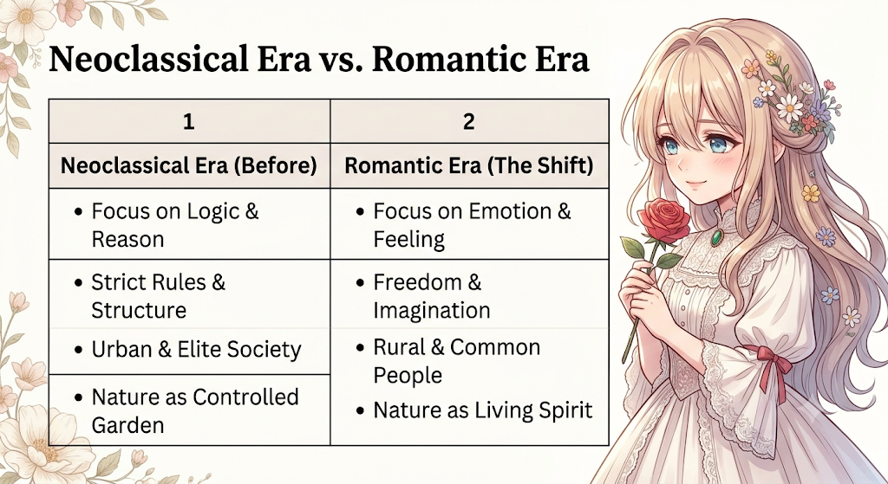

MJC 09: British Romantic Literature
| ENGLISH | |
| 9 | |
| Study Space | |
| https://drive.google.com/drive/folders/1dgsWdEjXCR8vLmOjHvJwslP7QnZbskUa?usp=drive_link |
Welcome to Unit 1: Historical and Literary Overview of the Romantic Period! Before we jump straight into sub-topic 1.1.1, let’s get a clear bird’s-eye view of what this entire unit is about and how all these topics connect with each other.
🗺️ Unit 1 Overview: How the Pieces Connect
Think of Unit 1 as the foundation story of the whole Romantic era.
┌──────────────────────────────────────────┐
│ FRENCH REVOLUTION & INDUSTRIALISATION │
│ (Massive political & social shifts) │
└────────────────────┬─────────────────────┘
│
▼
┌──────────────────────────────────────────┐
│ NEW WAY OF THINKING & WRITING │
│ (Rejection of strict rules & logic) │
└────────────────────┬─────────────────────┘
│
▼
┌──────────────────────────────────────────┐
│ LITERARY FEATURES & AESTHETICS │
│ (Nature as God, Individual freedom, │
│ Gothic mystery, Common people's voice) │
└──────────────────────────────────────────┘- The Spark (Historical Context & Revolutions): World events like the French Revolution and the Industrial Revolution completely changed human society. People moved from peaceful villages into crowded, dirty factory towns. At the same time, ideas of individual freedom, human rights, and equality were exploding across Europe.
- The Reaction (Literary Features & Aesthetics): Writers and poets were deeply affected by these massive changes. They grew tired of strict rules, cold logic, and artificial city life. So, they created a brand-new style of literature that focused on emotions, imagination, nature, and personal freedom.
When you understand why the world was changing historically, every single Romantic poem and novel you read in later units will instantly make sense!
📖 Sub-Topic 1.1: Historical Context & Revolutions
1.1.1 Characteristics of the Romantic Revival (The Age of Revolution)
To understand the Romantic Revival (roughly 1789 to 1837), we first need to look at what came right before it.
Before the Romantic period, European literature was dominated by the Neoclassical Era (often called the Age of Reason or Enlightenment). During that time, writers believed that literature should be governed by strict rules, logic, scientific reason, and formal order. They wrote mostly about elite city society, kings, and nobles using very complex, formal language.
Then came the Romantic Revival. It was not just a slight change in style; it was a rebellion! Romantic writers threw out the old rulebooks and declared that human feeling, imagination, and nature were far more important than cold logic and mechanical rules.
🔑 Core Characteristics of the Romantic Revival
Here are the primary features that define the Romantic movement:
1. Emotion Over Reason (Feeling Comes First)
Neoclassical writers said, "I think, therefore I am." Romantic poets said, "I feel, therefore I am."
For Romantics, genuine human emotion—such as intense joy, deep sadness, wonder, terror, and love—was the true source of wisdom. They believed that cold logic alone could never explain the human soul.
2. The Power of Imagination
Imagination was not seen as mere daydreaming; it was considered a supreme creative power that allowed humans to see hidden truths in the world. As the poet William Blake famously put it, imagination was the ability to see the divine in everyday life.
3. Love for Nature & Pantheism
Nature was not just a background setting or a pretty garden for Romantic writers. It was a living, breathing spiritual force. Most Romantic poets practiced Pantheism—the belief that God exists inside nature itself (in the trees, rivers, mountains, and wind). Nature was viewed as a teacher, a healer, and a sanctuary away from dirty, polluted cities.
4. Individualism & Personal Freedom
The individual person became the center of literature. Romantics celebrated the lonely thinker, the dreamer, the rebel, and the outcast. They believed every human spirit deserved total personal, emotional, and political freedom.
5. Interest in the Common Man & Everyday Language
Instead of writing only about kings, generals, and wealthy lords, Romantic poets wrote about simple rural people: shepherds, leech-gatherers, village children, and beggars. Wordsworth explicitly stated that poetry should be written in the "language really used by men"—simple, straightforward, and emotionally clear.
6. Escape to the Past, Supernatural, & Unknown
Romantics loved looking back to medieval times, folk legends, distant magical places, and supernatural stories. This gave them an escape from the harsh, dull reality of modern industrial life.


🧠 Quick Memory Trick for Exams
Remember the acronym "I-N-S-P-I-R-E" to instantly recall the key traits of the Romantic Revival:
| Letter | Feature | Quick Meaning |
|---|---|---|
| I | Imagination | Supreme creative power to see hidden truths. |
| N | Nature | Living spiritual teacher and healer (Pantheism). |
| S | Subjectivity | Focus on personal feelings, moods, and inner self. |
| P | Primitive / Common Man | Simple rural life over artificial city life. |
| I | Individualism | Celebrating the rebel, dreamer, and personal freedom. |
| R | Rebellion | Rejecting strict rules, logic, and political oppression. |
| E | Emotions | Deep feelings (wonder, terror, love) over cold reason. |
🎯 Summary Check for 1.1.1
- The Romantic Revival was a literary revolution against Neoclassical rules and cold industrial logic.
- It elevated feeling, nature, imagination, and common human experience to the highest levels of art.
- It set the stage for all the poetry and fiction you will study in Units 2, 3, and 4!
1.1.2 Origin and Impact of the French Revolution
The French Revolution (1789–1799) was not just a political event in France—it was an intellectual earthquake that shook the entire continent of Europe. For British Romantic poets and thinkers, it was the single most influential historical event of their lifetimes.
1. Origins of the French Revolution: Why Did It Happen?
To understand why British writers got so excited, we first need to understand how deeply unfair French society was before 1789. France was divided into three strict social classes called Estates:
┌──────────────────────────────────┐
│ FIRST ESTATE: Clergy (Church) │
│ • Very Rich │
│ • Paid Almost ZERO Taxes │
└────────────────┬─────────────────┘
│
▼
┌──────────────────────────────────┐
│ SECOND ESTATE: Nobility (Lords) │
│ • Very Rich & Powerful │
│ • Paid Almost ZERO Taxes │
└────────────────┬─────────────────┘
│
▼
┌──────────────────────────────────┐
│ THIRD ESTATE: Common People │
│ • Peasants, Workers, Doctors │
│ • 98% of the Population │
│ • Paid ALL THE TAXES │
└──────────────────────────────────┘Key Causes of the Uprising:
- Extreme Inequality: The King (Louis XVI) and the rich lords lived in luxury, while the common people faced starvations, poverty, and unfair taxes.
- Economic Crisis: France was bankrupt due to wars and royal overspending. Bread prices skyrocketed, leaving poor families unable to eat.
- Enlightenment Ideas: Philosophers like Jean-Jacques Rousseau argued that power belongs to the people, not kings. Rousseau’s famous line, "Man is born free, and everywhere he is in chains," became the slogan of the revolution.
- The Storming of the Bastille (July 14, 1789): Angry citizens attacked the Bastille, a medieval prison-fortress in Paris that symbolised the King's tyrannical power. This event officially launched the French Revolution!
2. The Impact of the Revolution on British Literature & Thinkers
The British response to the French Revolution went through two distinct phases: Initial High Hope, followed by Deep Heartbreak and Disillusionment.
Phase 1: Initial Excitement and Idealism (1789 – 1792)
When the revolution started, young British poets—especially William Wordsworth, Samuel Taylor Coleridge, and William Blake—were thrilled! They believed they were witnessing the rebirth of human freedom and the end of tyranny.
Wordsworth famously wrote in his poem The Prelude:
"Bliss was it in that dawn to be alive,But to be young was very heaven!"
For these writers, the revolution meant that a fair, equal, and peaceful world was finally being created.
Phase 2: The Reign of Terror and Disillusionment (1793 – 1794)
Soon, the revolution turned extremely violent:
- The French revolutionaries executed King Louis XVI and Queen Marie Antoinette using the guillotine.
- A radical leader named Maximilien Robespierre took control, leading a period called the Reign of Terror, where tens of thousands of ordinary citizens were executed without fair trials.
- France then invaded other countries and declared war on Britain.
The Emotional Shock: Romantic poets were devastated. Their dream of universal peace ended in bloodshed. This heartbreak turned their focus away from politics and toward Nature and Inner Philosophy. They realized that political power corrupted humans, but Nature offered spiritual purity and peace.

3. How the Revolution Shaped Romantic Themes
- Rebellion Against Tyranny: Romantics began viewing kings, strict religious institutions, and oppressive governments as villains who chain the human spirit (seen clearly in William Blake's poems like London).
- Focus on the Common Man: The revolution proved that ordinary peasants and workers mattered just as much as royalty.
- The Rise of Political Pamphlets: The revolution sparked intense debate in Britain between conservative thinkers (like Edmund Burke) and radical thinkers (like Thomas Paine and Mary Wollstonecraft).
🧠 Quick Memory Trick for Exams
Remember the "H-T-R" pattern to explain the Romantic reaction to the French Revolution:
| Stage | Name | Key Concept |
|---|---|---|
| H | Hope (1789) | Initial joy, excitement, and belief in freedom (Liberty, Equality, Fraternity). |
| T | Terror (1793) | Guillotine, violence, and war cause deep shock and sorrow. |
| R | Retreat (Post-1793) | Poets turn away from bloody politics and retreat into Nature, Art, and Spirituality. |
🎯 Summary Check for 1.1.2
- The French Revolution arose from extreme inequality and social oppression in France.
- British Romantic poets loved it at first because it stood for human liberty and equality.
- The subsequent violence (Reign of Terror) deeply shocked the poets, pushing them to seek truth and solace in Nature rather than political movements.
1.1.3 Industrialisation and its Social Effects
While the French Revolution was a violent political uprising across the English Channel in France, Britain was undergoing its own massive, quiet revolution at home: the Industrial Revolution (roughly 1760–1840).
It transformed Britain from a peaceful, rural, farming society into the world’s first steam-powered, factory-driven industrial powerhouse.
1. What was the Industrial Revolution?
Before this period, people lived mostly in small villages, growing their own food and weaving cloth by hand using basic tools (Cottage Industry).
With new technological inventions—such as James Watt’s steam engine, the spinning jenny, and mechanical looms—production moved out of small homes and into massive urban factories.
┌──────────────────────────────────┐
│ BEFORE INDUSTRIALISATION │
│ • Rural & Green Countryside │
│ • Handmade & Slow Production │
│ • Strong Family & Community Ties│
└────────────────┬─────────────────┘
│
▼
┌──────────────────────────────────┐
│ THE INDUSTRIAL SHIFT (Machines) │
│ • Steam Engines & Coal Mining │
│ • Enclosure Acts (Land Taken) │
│ • Mass Production in Cities │
└────────────────┬─────────────────┘
│
▼
┌──────────────────────────────────┐
│ AFTER INDUSTRIALISATION │
│ • Crowded & Polluted Cities │
│ • Factory System & Long Hours │
│ • Exploitation & Child Labour │
└──────────────────────────────────┘2. Major Social Effects of Industrialisation
The rapid rise of factories completely changed human lives—and mostly for the worse for the working class.
A. Urbanisation and Overcrowding
- Millions of farm labourers lost their land due to laws like the Enclosure Acts (which allowed rich lords to buy up public village land).
- Lacking work in the countryside, families flooded into factory cities like Manchester, London, and Birmingham.
- Cities grew too fast without proper planning, leading to dirty slums, lack of clean water, open sewers, and deadly disease outbreaks (like cholera and typhoid).
B. Brutal Working Conditions & Exploitation
- Long Hours: Men, women, and children worked 12 to 16 hours a day, 6 days a week, in dark, dangerous factories and coal mines.
- Low Pay: Factory owners paid tiny wages because workers were easily replaceable.
- Child Labour: Small children were preferred for spinning mills and chimney sweeping because they had small hands and could fit into tight machine gaps or dark chimneys. Many were injured or died in industrial accidents.
C. Destruction of Nature and Environmental Pollution
- Beautiful green pastures were destroyed to build coal mines, iron foundries, and railway tracks.
- Black smoke from coal-burning factories choked city skies, and industrial waste turned rivers into polluted streams.
- To Romantic poets, the natural landscape was being desecrated by human greed.
3. How Industrialisation Shaped Romantic Literature
Romantic poets hated the Industrial Revolution. They saw it as a mechanical monster that destroyed both human innocence and the purity of Nature.
- Rejection of "Mechanical" Living: Romantics believed machines treated human beings like lifeless cogs in a wheel. They argued that money and mass production were corrupting the human soul.
- William Blake famously described factories as "Dark Satanic Mills" in his poem Jerusalem.
- Escape to Nature (Solace and Healing): As cities became dirty, noisy, and smoky, poets like William Wordsworth wrote about escaping into mountains, lakes, and forests. Nature became a sanctuary where the human spirit could heal from industrial stress.
- Social Protest & Empathy for the Poor: Poets became the voice of the exploited working class.
- In 'The Chimney Sweeper', Blake exposes how poor orphan boys were used and abandoned by rich factory owners and church authorities.
- In 'London', Blake describes walking through city streets marked by "weakness" and "woe", hearing the cries of child sweepers and young soldiers.

🧠 Quick Memory Trick for Exams
Remember the acronym "S-M-O-K-E" to summarize the social impact of Industrialisation:
| Letter | Impact Factor | Quick Summary |
|---|---|---|
| S | Slums & Disease | Overcrowded, filthy city housing with poor sanitation. |
| M | Machine Rule | Human beings treated like cogs; loss of individuality. |
| O | Oppression of Children | Child labour in dangerous mines, mills, and chimneys. |
| K | Killing Nature | Pollution of air/water and destruction of green landscapes. |
| E | Escape to Countryside | Romantic poets fleeing cities to seek peace in Nature. |
🎯 Summary Check for 1.1.3
- Industrialisation replaced rural handmade life with urban factory machines.
- It created severe social problems: child labour, slums, extreme poverty, and environmental destruction.
- Romantic literature was a direct protest against industrialization, urging people to return to Nature, emotion, and human dignity.
1.1.4 Concepts of Liberty, Equality, and Fraternity
The slogan "Liberté, Égalité, Fraternité" (Liberty, Equality, Fraternity) was the official rallying cry of the French Revolution (1789).
These three powerful ideas did not stay inside France; they spread across Europe like wildfire and became the philosophical beating heart of Romantic literature.
┌──────────────────────────────────────────┐
│ LIBERTY, EQUALITY, FRATERNITY │
│ (The Revolutionary Triad) │
└────────────────────┬─────────────────────┘
│
┌───────────────────┼───────────────────┐
│ │ │
▼ ▼ ▼
┌─────────────────┐ ┌─────────────────┐ ┌─────────────────┐
│ LIBERTY │ │ EQUALITY │ │ FRATERNITY │
│ Freedom of Mind │ │ Dignity of the │ │ Human Brotherhood│
│ & Expression │ │ Common Person │ │ & Social Unity│
└─────────────────┘ └─────────────────┘ └─────────────────┘1. Breaking Down the Three Core Concepts
To understand how these ideals influenced poetry and prose, let’s examine each concept individually:
1. Liberty (Freedom)
- What it Means: The right of every individual to think, speak, act, and create without being crushed by kings, dictators, or strict religious institutions.
- Romantic Connection: Romantic poets saw mental and creative freedom as essential. They rebelled against rigid literary rules and social constraints.
- Example in Literature: William Blake famously wrote in his poem London about the "mind-forg'd manacles" (invisible mental chains) created by societal authority. Romantics fought to break these chains.
2. Equality (Barabari / Equal Rights)
- What it Means: The belief that all human beings are born equal, regardless of class, wealth, title, or birthright. No king is naturally superior to a peasant.
- Romantic Connection: Before this period, literature focused almost exclusively on upper-class heroes, kings, and nobles. Romantic writers completely inverted this tradition by making ordinary rural people, beggars, children, and outcasts the heroes of their poems.
- Example in Literature: William Wordsworth wrote about humble leech-gatherers and rustic village folk, treating their feelings with deep dignity and seriousness.
3. Fraternity (Brotherhood / Universal Unity)
- What it Means: A feeling of deep unity, empathy, and connection among all human beings as brothers and sisters.
- Romantic Connection: Romantics expanded this idea beyond just human society—they believed humans share a spiritual bond with Nature and all living creatures.
- Example in Literature: Samuel Taylor Coleridge captured this broader sense of fraternity in The Rime of the Ancient Mariner:
"He prayeth best, who loveth bestAll things both great and small."
2. How the Ideals Transformed Romantic Aesthetics
The triad of Liberty, Equality, and Fraternity altered not just what poets wrote about, but how they wrote.
- Democratic Language: William Wordsworth declared in the Preface to Lyrical Ballads that poetry should be written in simple, everyday language that ordinary people can understand, rather than artificial, hyper-formal poetic diction.
- Political Activism in Literature: Poets used their pens as weapons against political tyranny and injustice. Percy Bysshe Shelley was a radical advocate for political revolution, famously calling poets "the unacknowledged legislators of the world."
- Empathy over Hierarchy: Literature shifted from praising power and conquest to empathizing with the suffering, the weak, and the oppressed.

🧠 Quick Memory Trick for Exams
Remember the "L-E-F" impact formula for your essay responses:
| Principle | Primary Focus | Literary Manifestation |
|---|---|---|
| Liberty | Freeing the Human Spirit | Breaking Neoclassical rules; celebrating imagination & rebellion. |
| Euality | Valuing Every Individual | Writing about peasants, children, and common folk with dignity. |
| Fraternity | Universal Connection | Promoting human empathy and a shared spiritual bond with Nature. |
🎯 Summary Check for 1.1.4
- Liberty, Equality, Fraternity served as the philosophical fuel of the Romantic Movement.
- Liberty inspired artistic rebellion against rules and social oppression.
- Equality elevated the common, working-class person into the subject of high literature.
- Fraternity fostered deep empathy among people and a spiritual unity with the natural world.
1.2 Literary Features and Aesthetics
1.2.1 Innovations in Writing: Thematic and Technical Points of View
Section 1.1 covered the historical shifts—revolutions, industrialization, and democratic ideals. Section 1.2 turns to how writers translated these historical forces into revolutionary artistic techniques.
Romantic writers did not just change what they talked about (themes); they completely reinvented how literature was written (technical point of view and style).
┌──────────────────────────────────────────┐
│ INNOVATIONS IN ROMANTIC WRITING │
└────────────────────┬─────────────────────┘
│
┌───────────────┴───────────────┐
│ │
▼ ▼
┌─────────────────────────┐ ┌─────────────────────────┐
│ THEMATIC CHANGES │ │ TECHNICAL CHANGES │
│ (What they wrote about)│ │ (How they wrote it) │
├─────────────────────────┤ ├─────────────────────────┤
│ • Subjective Feelings │ │ • First-Person "I" │
│ • Everyday Life & Rustic│ │ • Simple, Natural Diction│
│ • The Sublime & Wonder │ │ • Free-Flowing Forms │
│ • The Supernatural │ │ • Spontaneous Overflow │
└─────────────────────────┘ └─────────────────────────┘1. Thematic Innovations (What They Wrote About)
Before the Romantics, literature focused on social rules, public manners, political satire, and heroic tales of kings and ancient gods. Romantic writers introduced entirely new themes into mainstream literature:
A. Internal Feeling & Subjectivity Over External Reality
- Neoclassical poetry acted as a mirror reflecting public society.
- Romantic poetry acted as a lamp projecting the poet's own inner thoughts, moods, and emotional experiences onto the world. The poet's personal mind became the main subject matter.
B. The Sublime (Terror + Beauty)
- Romantics were fascinated by the Sublime—the feeling of awe, grandeur, and slight terror experienced when facing vast, uncontrollable natural forces (such as towering mountains, roaring oceans, or wild thunderstorms).
- Unlike mere "beauty" (which feels pleasant and calm), the Sublime overwhelms the mind and reminds humans of their smallness.
C. The Glory of Childhood & Innocence
- Inspired by philosophers like Jean-Jacques Rousseau, Romantics saw children not as uneducated adults, but as pure, divine beings unpolluted by society's corruption.
- Childhood became a major literary theme representing spiritual clarity, wonder, and raw imagination.
D. The Supernatural & Exotic Worlds
- Writers embraced folk tales, medieval legends, gothic ghosts, and strange distant lands (e.g., Samuel Taylor Coleridge’s magical sea journeys in The Rime of the Ancient Mariner or the mystical palace in Kubla Khan).
2. Technical & Stylistic Innovations (How They Wrote It)
To match these new themes, Romantic writers developed groundbreaking technical strategies:
A. The Dominance of the Lyric First-Person ("I")
- Instead of detached 3rd-person narrators, poems shifted to the intimate 1st-person voice ("I"). When Wordsworth writes "I wandered lonely as a cloud", the reader directly connects with the personal voice and emotional reality of the speaker.
B. Rejection of Poetic Diction (Simple Language)
- Eighteenth-century poets used complex, artificial vocabulary (e.g., calling birds "feathered choir" or fish "finny tribe").
- Wordsworth’s revolutionary manifest in the Preface to Lyrical Ballads demanded a return to "the language really used by men"—clear, emotional, rustic, and accessible to everyone.
C. Abandoning Rigid Metrical Structures
- Neoclassical poetry relied heavily on strict, rhyming Heroic Couplets (AABB rhyming pairs in strict iambic pentameter).
- Romantics favored more flexible, musical, and expressive forms, such as Blank Verse (unrhymed iambic pentameter), Odes, and Ballad Stanzas that mirrored natural speech rhythms.
D. Poetry as "Spontaneous Overflow of Powerful Feelings"
- Wordsworth gave the most famous definition of Romantic poetry:
"Poetry is the spontaneous overflow of powerful feelings: it takes its origin from emotion recollected in tranquility."
- This meant art was no longer a cold, calculated mathematical exercise; it was an authentic outpouring of human emotion edited with quiet reflection.

🧠 Quick Memory Trick for Exams
Remember the acronym "L-A-M-P" for Romantic writing innovations:
| Letter | Innovation | Description |
| L | Lyric First-Person ("I") | Intimate, personal narration focusing on the inner self. |
| A | Accessible Language | Throwing out artificial jargon for everyday, simple diction. |
| M | Mind as Source | Emotion recollected in tranquility rather than external social rules. |
| P | Passionate Themes | Embracing the Sublime, childhood innocence, and the supernatural. |
🎯 Summary Check for 1.2.1
- Romanticism changed themes by focusing on subjective emotion, the Sublime, childhood, and the supernatural.
- It changed techniques by adopting the first-person "I" voice, simple everyday diction, and flexible poetic forms.
- It turned literature from a rigid social mirror into a creative, expressive lamp.
1.2.2 Conceptions of Nature in Romantic Literature
If there is one topic that defines the entire Romantic Movement, it is Nature.
However, for Romantic writers, Nature was not just green trees, pretty flowers, or scenic landscapes to look at on a weekend walk. Nature was viewed as a living, spiritual, moral, and divine force that interacts directly with the human soul.
┌──────────────────────────────────────────┐
│ ROMANTIC CONCEPTIONS OF NATURE │
└────────────────────┬─────────────────────┘
│
┌───────────────────┬────────────────────┼────────────────────┐
│ │ │ │
▼ ▼ ▼ ▼
┌─────────────────┐ ┌─────────────────┐ ┌──────────────────┐ ┌─────────────────┐
│ LIVING SPIRIT │ │ MORAL TEACHER │ │ SANCTUARY & │ │ THE SUBLIME │
│ (Pantheism) │ │ & GUIDE │ │ HEALER │ │ (Awe & Terror) │
├─────────────────┤ ├─────────────────┤ ├──────────────────┤ ├─────────────────┤
│ God lives inside│ │ Nature teaches │ │ Heals the mind │ │ Wild, massive │
│ all natural │ │ virtue, truth, │ │ from ugly, dirty │ │ natural power │
│ elements. │ │ and goodness. │ │ industrial cities│ │ that overwhelms.│
└─────────────────┘ └─────────────────┘ └──────────────────┘ └─────────────────┘1. Key Dimensions of Nature in Romanticism
A. Pantheism (Nature as a Living Spirit)
Before the Romantics, Neoclassical thinkers viewed the world like a giant, mechanical clockwork built by a distant God who set it in motion and walked away.
Romantics rejected this cold view. They embraced Pantheism—the belief that God and Nature are one. God is not sitting far away in the clouds; divine energy actively dwells inside every mountain, river, tree, bird, and human heart.
- William Wordsworth described this spiritual presence in Tintern Abbey:
"A motion and a spirit, that impelsAll thinking things, all objects of all thought,And rolls through all things."
B. Nature as the Ultimate Moral Teacher & Guide
Romantics believed that formal textbooks and human institutions (like churches, schools, and governments) often corrupt the mind with greed and false pride. Nature, on the other hand, teaches true morality, humility, and wisdom.
- In 'The Tables Turned', Wordsworth tells the reader to close boring books:
"One impulse from a vernal woodMay teach you more of man,Of moral evil and of good,Than all the sages can."
C. Nature as a Sanctuary & Emotional Healer
As we saw in section 1.1.3, the Industrial Revolution made cities smoky, crowded, noisy, and stressful. Nature became a refuge and sanctuary where the soul could find rest, emotional renewal, and inner peace.
D. The Sublime: Awe, Terror, and Infinity
Nature was not always calm and sweet; it was also fierce, immense, and dangerous. Romantics made a crucial distinction between:
- The Beautiful: Calm, small, balanced, and pleasant (like a garden flower or a peaceful pond).
- The Sublime: Massive, wild, dangerous, and overwhelming (like towering icy alps, raging ocean storms, or deep dark chasms). The Sublime thrills the human mind while making humans realize how small they are compared to the infinite cosmos.
2. How Different Romantic Poets Viewed Nature
While all Romantics loved Nature, each poet had a unique perspective on it:
| Poet | Perspective on Nature | Key Characteristics |
|---|---|---|
| William Wordsworth | High Priest of Nature | Sees Nature as a loving mother, nurse, guardian, and spiritual guide. |
| Samuel Taylor Coleridge | Mystical & Psychological | Sees Nature as a canvas reflecting human emotions and supernatural mystery. |
| Percy Bysshe Shelley | Wild & Revolutionary | Sees Nature as a fierce force of change (e.g., West Wind) that destroys old decay to bring new life. |
| John Keats | Sensuous & Aesthetic | Focuses on the intense physical beauty, colors, scents, and sounds of Nature. |

🧠 Quick Memory Trick for Exams
Remember the acronym "P-A-T-H" to recall how Romantics walked the path of Nature:
| Letter | Conception | Meaning |
|---|---|---|
| P | Pantheism | God is alive inside every element of Nature. |
| A | Awe (Sublime) | Experiencing wild, vast natural forces with thrilling terror. |
| T | Teacher | Nature teaches moral goodness and truth better than human books. |
| H | Healer | A peaceful sanctuary away from dirty, mechanical industrial cities. |
🎯 Summary Check for 1.2.2
- For Romantics, Nature was a living spiritual entity, not a dead machine or static backdrop.
- Pantheism made Nature a divine space to experience God directly.
- Nature functioned as a moral teacher, spiritual healer, and source of Sublime awe.
1.2.3 Literature and Revolution
In the Romantic era, literature was not an abstract hobby or an elite status symbol—it was a weapon of social and political transformation.
The political uprisings of the late 18th century (especially the French and American Revolutions) proved that centuries-old monarchies could be overthrown. Romantic writers realized that ideas expressed through poetry, novels, and pamphlets could reshape human consciousness and ignite real-world change.
┌──────────────────────────────────────────┐
│ LITERATURE AND REVOLUTION │
│ (The Pen as a Revolutionary Weapon) │
└────────────────────┬─────────────────────┘
│
┌──────────────────────────────────────┼──────────────────────────────────────┐
│ │ │
▼ ▼ ▼
┌─────────────────────────┐ ┌─────────────────────────┐ ┌─────────────────────────┐
│ POLITICAL RADICALISM │ │ DEMOCRATISING ART │ │ REVOLUTION OF THE MIND │
│ & SOCIAL CRITIQUE │ │ (Language of the Folk) │ │ (Imagination & Spirit) │
├─────────────────────────┤ ├─────────────────────────┤ ├─────────────────────────┤
│ Exposing tyranny, child │ │ Breaking aristocratic │ │ Freeing human thought │
│ exploitation, church │ │ poetic barriers to speak│ │ from mental and social │
│ hypocrisy, and slavery. │ │ directly to common folk.│ │ chains ("manacles"). │
└─────────────────────────┘ └─────────────────────────┘ └─────────────────────────┘1. The Power of Political Pamphlets and Radical Essays
During the 1790s, Britain experienced an intense public debate known as the "Revolution Controversy." Authors took to political pamphlets to debate whether revolution was a force for good or evil:
- Edmund Burke (Conservative): Wrote Reflections on the Revolution in France (1790), arguing that sudden revolution destroys society's traditions, stability, and legal heritage.
- Thomas Paine (Radical): Responded with Rights of Man (1791), defending human liberty, equality, and the right of citizens to overthrow corrupt rulers. It sold hundreds of thousands of copies and inspired working-class political awareness.
- Mary Wollstonecraft (Feminist Revolutionary): Wrote A Vindication of the Rights of Men (1790) and A Vindication of the Rights of Woman (1792), pioneering the radical idea that women deserve equal education, independence, and political rights.
2. How Romantic Poets Engaged with Revolution
Romantic poets were active political commentators and cultural rebels. They saw themselves as visionaries guiding humanity toward freedom.
A. William Blake: The Prophet of Social Justice
- Blake created illustrated prophetic poems attacking the corrupt institutions of his time: the Monarchy, the Church, and wealthy industrial factory owners.
- In 'London', he wrote:
"In every cry of every Man,"In every Infant's cry of fear,"In every voice, in every ban,"The mind-forg'd manacles I hear."
- Meaning: People were trapped not just by physical locks, but by psychological chains constructed by tyrannical authorities.
B. William Wordsworth & Samuel Taylor Coleridge: Literary Revolution
- While Wordsworth and Coleridge grew politically conservative in their later years after the French Reign of Terror, their early work (Lyrical Ballads, 1798) was a literary revolution.
- By throwing out artificial upper-class diction and writing about humble rural workers in simple language, they democratized poetry itself.
C. Percy Bysshe Shelley: The Radical Freedom Fighter
- Shelley was the most uncompromising revolutionary of the younger generation. He openly preached atheism, political uprising, and pacifist resistance against corrupt governments.
- In his essay A Defence of Poetry, Shelley delivered one of the most famous declarations in English literature:
"Poets are the unacknowledged legislators of the World."
- Meaning: Rulers and politicians write legal laws, but poets shape human morals, values, and imagination—the ultimate foundation of society.
3. The Shift from Outer Uprising to Inner Transformation
When political uprisings in Europe descended into violent dictatorships (like Napoleon's empire), Romantic writers realized that true revolution cannot happen purely on the battlefield.
For lasting freedom to occur, humans must undergo an internal revolution of the mind and spirit:
- External Revolution (Political): Changes laws, rulers, and borders—but often ends in political corruption or violence.
- Internal Revolution (Romantic/Literary): Changes human imagination, empathy, and spiritual connection—freeing humans permanently from greed and hatred.

🧠 Quick Memory Trick for Exams
Remember the acronym "P-E-N" to structure your exam answers on Literature and Revolution:
| Letter | Dimension | Meaning |
|---|---|---|
| P | Political Radicalism | Attacking tyranny, royal oppression, and social injustice directly. |
| E | Egalitarian Language | Making literature accessible to common people instead of elites. |
| N | New Mindset | Transforming human imagination and empathy rather than relying solely on bloody wars. |
🎯 Summary Check for 1.2.3
- Literature during the Romantic era was a direct vehicle for social and political protest.
- Thinkers like Paine and Wollstonecraft fought for human rights and equality through political prose.
- Romantic poets like Blake and Shelley exposed social corruption, declaring that poets shape the moral vision of the world.
1.2.4 The Gothic Tradition in Literature
While core Romantic poetry focused on sunny green meadows, peaceful lakes, and spiritual nature, the Gothic Tradition explored the dark, mysterious, and terrifying side of the Romantic imagination.
The Gothic genre was the dark mirror of Romanticism. Both movements valued intense emotion, individual feeling, and imagination—but while mainstream Romantics sought feelings of wonder, love, and peace, Gothic writers pursued feelings of fear, horror, suspense, and the supernatural.
┌──────────────────────────────────────────┐
│ THE ROMANTIC IMAGINATION │
└────────────────────┬─────────────────────┘
│
┌───────────────┴───────────────┐
│ │
▼ ▼
┌─────────────────────────┐ ┌─────────────────────────┐
│ LIGHT ROMANTICISM │ │ DARK ROMANTICISM │
│ (Nature & Wonder) │ │ (The Gothic Tradition)│
├─────────────────────────┤ ├─────────────────────────┤
│ • Peaceful Countryside │ │ • Dark Castles & Ruins │
│ • Spiritual Joy & Hope │ │ • Terror, Horror & Awe │
│ • Common Rural Life │ │ • Monsters & Ghosts │
│ • Divine Goodness │ │ • Psychological Madness │
└─────────────────────────┘ └─────────────────────────┘1. Origins and Key Elements of Gothic Literature
The word "Gothic" originally referred to medieval Germanic tribes (the Goths) and medieval architecture (like dark, towering stone cathedrals with pointed arches). Horace Walpole officially launched the literary genre with his 1764 novel The Castle of Otranto: A Gothic Story.
Core Ingredients of a Gothic Story:
- Dark, Eerie Settings: Abandoned stone castles, decaying abbeys, gloomy dungeons, secret underground passages, graveyards, and isolated, stormy mountains.
- The Supernatural & Macabre: Ghosts, family curses, monsters, living portraits, vampires, and unexplained terrifying events.
- Atmosphere of Terror and Suspense: Heavy fog, sudden lightning, howling winds, flickering candles, slamming doors, and a constant feeling of dread.
- The Tyrannical Villain & Periled Maiden: A cruel, power-hungry lord or villain who threatens an innocent young heroine trapped inside a dark fortress.
- High Emotional Intensity: Characters experiencing extreme madness, intense passion, paralyzing fear, and profound grief.
2. Terror vs. Horror: A Crucial Gothic Distinction
Gothic writers (notably Ann Radcliffe, author of The Mysteries of Udolpho) made a famous distinction between Terror and Horror:
- Terror (Psychological Suspense): Expands the soul and awakens the mind through uncertainty, dark imagination, and waiting for danger (e.g., hearing footsteps outside a dark room).
- Horror (Physical Shock): Contracts and nauseates the mind through explicit gore, gruesome violence, blood, and grotesque physical reality.
Romantic Gothic literature prioritized Terror because it stimulated the reader's imagination and evoked the Sublime.
3. How the Gothic Connects to the Romantic Era
The Gothic tradition was not just cheap horror entertainment; it reflected deep fears and anxieties of late 18th-century European society:
- Fear of the Industrial World: As cities became cold and mechanical, readers craved mysterious medieval worlds where magic, mystery, and ancient passions still existed.
- Exploring Human Psychology: Gothic stories investigated the dark corners of the human mind—guilt, repressed desires, madness, and irrational fears that cold scientific logic could not explain.
- The Ancestor of Modern Genres: The Gothic tradition gave birth to modern Horror, Mystery, Thrillers, and Science Fiction. Mary Shelley’s Frankenstein (Unit 4) is the ultimate masterpiece where Gothic horror meets scientific ambition!

🧠 Quick Memory Trick for Exams
Remember the acronym "G-O-T-H-I-C" to list the main traits of Gothic fiction:
| Letter | Trait | Quick Description |
|---|---|---|
| G | Gloomy Settings | Haunted castles, dark dungeons, decaying ruins, and stormy skies. |
| O | Overwhelming Emotion | Extreme fear, dread, grief, madness, and intense passion. |
| T | Terror & Suspense | Psychological anticipation of danger and supernatural mystery. |
| H | Haunting / Curses | Family curses, ghosts, monsters, and dark ancestral secrets. |
| I | Isolation | Characters trapped in remote places cut off from human help. |
| C | Challenging Logic | Proving that human life contains dark mysteries science cannot explain. |
🎯 Summary Check for 1.2.4
- The Gothic tradition is the dark branch of Romanticism, focusing on terror, mystery, and the supernatural.
- Key features include haunted medieval settings, psychological terror, curses, and high emotional drama.
- It explored the hidden anxieties of society and paved the way for works like Mary Shelley's Frankenstein.
Welcome to Unit 2: Early Romantic Poetry! Before we jump straight into William Blake's poem 'The Lamb' (2.1.1), let’s get a clear overview of what this unit covers and how the poets fit together.
🗺️ Unit 2 Overview: The First Generation of Romantics
Unit 1 set up the historical backdrop—revolutions, industrialization, and democratic ideals. Unit 2 introduces the pioneers who put those revolutionary ideas into poetic verse.
┌──────────────────────────────────────────┐
│ UNIT 2: EARLY ROMANTIC POETS │
└────────────────────┬─────────────────────┘
│
┌──────────────────────────────────────────┼──────────────────────────────────────────┐
│ │ │
▼ ▼ ▼
┌─────────────────────────┐ ┌─────────────────────────┐ ┌─────────────────────────┐
│ WILLIAM BLAKE │ │ ROBERT BURNS │ │ WILLIAM WORDSWORTH │
│ (Visionary & Mystic) │ │ (The Bard of Scotland)│ │ (High Priest of Nature)│
├─────────────────────────┤ ├─────────────────────────┤ ├─────────────────────────┤
│ • Songs of Innocence │ │ • Lyric simplicity │ │ • Loss of childish divine│
│ • Songs of Experience │ │ • Pure emotional love │ │ vision │
│ • Good vs. Evil Balance │ │ • Vernacular folk style │ │ • Philosophical memory │
└─────────────────────────┘ └─────────────────────────┘ └─────────────────────────┘- William Blake (2.1): A mystical artist and poet who viewed the world through two contrasting states of the human soul: Innocence (pure, trusting, divine) and Experience (corrupted, cruel, realistic).
- Robert Burns (2.2): Scotland’s national poet, who brought heartfelt simplicity, folk musicality, and passion into English poetry.
- William Wordsworth (2.3): The leader of the Romantic Movement, who explored childhood memories, divine connection, and spiritual growth through Nature.
📖 Sub-Topic 2.1: William Blake
William Blake (1757–1827) was an unrecognised genius during his lifetime. He was not just a poet; he was also an engraver and painter who illustrated his own poems.
Blake’s most famous work is his combined poetry collection: Songs of Innocence and of Experience: Shewing the Two Contrary States of the Human Soul.
- Songs of Innocence (1789): Written before the French Revolution turned violent. Represents the uncorrupted state of childhood, joy, trust, and divine love.
- Songs of Experience (1794): Written after witnessing industrial cruelty and political bloodshed. Represents the corrupted adult world marked by hypocrisy, exploitation, cruelty, and doubt.
2.1.1 'The Lamb' (from Songs of Innocence)
'The Lamb' is one of the key poems in Songs of Innocence. On the surface, it reads like a simple, sweet nursery rhyme or a Christian Sunday-school hymn. However, underneath its simple words lies a profound theological and philosophical message.
1. Line-by-Line Breakdown & Meaning
The poem is structured as a conversation between a child and a little lamb grazing in a green meadow.
Stanza 1: The Child's Question to the Lamb
"Little Lamb who made thee?Dost thou know who made thee?"
- Analysis: The child speaker approaches a young lamb and asks a fundamental question of existence: "Do you know who created you?"
- The child describes all the wonderful things God gave the lamb:
- Soft, woolly clothing ("Softest clothing wooly bright").
- A tender, sweet voice that makes the entire valley happy ("Making all the vales rejoice").
- The question is asked twice, creating a rhythmic, song-like musicality.
Stanza 2: The Child Answers His Own Question
"Little Lamb I'll tell thee,"Little Lamb I'll tell thee!"
- Analysis: The child does not wait for an answer. In his innocent clarity, he already knows the divine truth!
- The child explains that the Creator shares the same name as the lamb:
- Jesus Christ is known in Christian tradition as the "Lamb of God" (innocent, meek, and gentle).
- Jesus also became a little child when he was born on Earth.
- Therefore, a divine trinity of innocence is formed: God = The Lamb = The Child.
- The poem ends with a sweet blessing: "Little Lamb God bless thee!"
2. Major Themes in 'The Lamb'
A. The Trinity of Innocence
The poem connects three distinct figures into one spiritual identity:
- The Lamb: Representation of pure animal creation, gentleness, and harmlessness.
- The Child: Representation of uncorrupted human innocence and pure faith.
- Jesus Christ: Representation of divine gentleness and love.
B. Nature as a Peaceful, Gentle World
In Songs of Innocence, Nature is not dangerous or terrifying (unlike the wild world in 'The Tyger'). It is a safe, sunny, green pasture where streams flow and valleys rejoice.
C. Absolute Faith and Security
There is zero doubt, fear, or questioning in this poem. The child lives in a world where God is loving, reachable, and completely gentle.

3. Technical & Poetic Features
- Form & Structure: Two stanzas of 10 lines each (20 lines total).
- Rhyme Scheme: Uses simple rhyming couplets (AABBCCDDAA). The repetitive rhyme mirrors nursery rhymes and church hymns, making it extremely easy to memorize.
- Tone: Peaceful, joyful, tender, and reverent.
- Symbolism:
- Wool / Clothing: Divine protection and warmth.
- Stream / Mead (Meadow): Purity and natural harmony.
🧠 Quick Memory Trick for Exams
Remember the acronym "L-A-M-B" to analyze this poem in your answers:
| Letter | Poetic Aspect | Key Insight |
|---|---|---|
| L | Lyric Simplicity | Written like a simple child's hymn with AABB rhyme scheme. |
| A | Absolute Faith | The child experiences zero doubt or fear about God. |
| M | Meekness & Peace | God is viewed as gentle, loving, and soft, not vengeful. |
| B | Blake's Trinity | Uniting God, Child, and Lamb into one symbol of Innocence. |
🎯 Summary Check for 2.1.1
- 'The Lamb' represents Blake's vision of pure innocence and divine love.
- The poem links the Lamb, the Child, and Jesus Christ as symbols of gentleness and harmlessness.
- It presents a calm, trusting view of creation that stands in total contrast to its twin poem, 'The Tyger'.
2.1.2 'The Chimney Sweeper' (from Songs of Innocence and Songs of Experience)
William Blake wrote two companion poems with the exact same title: 'The Chimney Sweeper'.
- One poem was published in Songs of Innocence (1789).
- The other was published in Songs of Experience (1794).
By placing these two poems side-by-side, Blake exposes the horrific reality of child labor in 18th-century England and attacks the moral hypocrisy of the Church and wealthy society who allowed this cruelty to happen.
1. Historical Background: The Chimney Sweepers
In 18th-century London, houses were heated by coal fireplaces. The narrow chimneys frequently clogged with deadly black soot.
To clean them, master sweeps bought poor orphan boys or bought young children from destitute parents for tiny sums. These children (often as young as 4 to 7 years old) were forced to climb up hot, dark, suffocating chimneys.
- They suffered from skin cancer, stunted growth, choked lungs, and frequent fatal falls.
- They were rarely washed, sleeping on bags of black soot.
2. Poem 1: 'The Chimney Sweeper' (Songs of Innocence)
In this version, an innocent child chimney sweeper tells his tragic story with heartbreaking innocence.
┌──────────────────────────────────────────┐
│ 'THE CHIMNEY SWEEPER' (INNOCENCE) │
└────────────────────┬─────────────────────┘
│
┌────────────────────────────────────┴────────────────────────────────────┐
│ │
▼ ▼
┌─────────────────────────────────┐ ┌─────────────────────────────────┐
│ THE HARSH REALITY │ │ TOM DAKRE'S DREAM │
├─────────────────────────────────┤ ├─────────────────────────────────┤
│ • Mother died when very young │ │ • Angel with a golden key │
│ • Sold by father before speaking│ │ • Unlocks thousands of coffins │
│ • Shaved head (loss of beauty) │ │ • Sweepers run free in green │
│ • Sleeps in soot & dust │ │ meadows & wash in a river │
└─────────────────────────────────┘ └─────────────────────────────────┘Key Plot & Narrative:
- The Speaker's Story: The child speaker tells us his mother died when he was very young, and his father sold him into chimney sweeping before he could even pronounce the word "sweep" properly (he could only cry "‘weep! ’weep! ’weep! ’weep!").
- Tom Dacre's Shaved Head: The speaker comforts a new little sweeper named Tom Dacre, who cries because his white curly hair (like lamb's wool) is being shaved off to keep soot out of it. The speaker gently tells him: "Hush, Tom! never mind it, for when your head's bare, / You know that the soot cannot spoil your white hair."
- Tom's Heavenly Vision/Dream: That night, Tom has a vivid dream:
- Thousands of child chimney sweepers (Dick, Joe, Ned, Jack) are locked inside black coffins.
- An Angel arrives with a bright golden key, unlocks the coffins, and sets all the children free!
- The boys run, laugh, and play in green fields, wash in a clean river, and shine bright in the sun.
- The Angel tells Tom that if he is a "good boy," he will have God for his father and never lack joy.
- The Ironic Morning Return: The next morning, Tom wakes up in the dark cold. They grab their soot-bags and brushes and head off to work in the freezing morning air. The poem ends with a famous line:
"So if all do their duty, they need not fear harm."
Deep Meaning & Blake's Bitter Irony:
- The children accept their suffering because they have been taught by the Church that if they work hard and don't complain ("do their duty"), they will go to Heaven.
- Blake uses bitter irony here: The Church and State are using religious promises of "Heaven" to trick poor children into accepting slavery and early death without protesting!
3. Poem 2: 'The Chimney Sweeper' (Songs of Experience)
In this companion poem, Blake drops the child's naive perspective and delivers a direct, aggressive attack on society's hypocrisy.
Key Plot & Narrative:
- A Dark Scene: An adult narrator walks through the cold winter snow and sees a little black child covered in soot, crying "‘weep! ’weep!" in notes of grief.
- Where are the Child's Parents? The narrator asks the child where his parents are. The child bitterly answers:
"They are both gone up to the church to pray."
- Exposing the Parents' Hypocrisy:
- The child explains that because he was naturally happy and played among the snow, his parents thought he didn't mind being a chimney sweeper.
- They dressed him in "clothes of death" (black sweeper rags) and taught him to sing the notes of woe.
- Because the child still tries to smile and sing occasionally, his parents assume he is fine—so they go to church to worship God, the Priest, and the King!
- The Brutal Closing Lines:
"They clothe him in the clothes of death,And taught him to sing the notes of woe...And gone to praise God and his Priest and King,Who make up a heaven of our misery."
Deep Meaning:
- The Unholy Trinity: The King (Government), the Priest (Religion), and the Parents (Family) are all united in exploiting the child.
- They build their own comfortable, holy "Heaven" on top of the physical "Misery" and death of helpless children.

🧠 Quick Memory Trick for Exams
Remember the acronym "S-O-O-T" to compare both poems in your essays:
| Letter | Analysis Aspect | Innocence Version | Experience Version |
|---|---|---|---|
| S | Speaker | Innocent child (Tom's friend). | Adult observing the child in the snow. |
| O | Oppression Source | Disguised by dreams of Angels. | Explicitly named: Parents, Church, King. |
| O | Outlook / Tone | Naive hope through religion. | Anger, bitterness, and social protest. |
| T | Target of Critique | False comfort used to trap workers. | Direct hypocrisy of society and religion. |
🎯 Summary Check for 2.1.2
- In Innocence, the child uses dreams and religious faith to cope with brutal child labor, unaware he is being exploited.
- In Experience, Blake shatters the illusion, showing that society, the Church, and parents profit directly from the child's suffering.
- Together, the two poems serve as a powerful indictment of Industrial-era cruelty.
2.1.3 'The Tyger' (from Songs of Experience)
If 'The Lamb' is the ultimate expression of gentle, peaceful innocence, then 'The Tyger' is its fierce, awe-inspiring, and dark counterpart from Songs of Experience.
Written in 1794, 'The Tyger' is one of the most famous, highly analyzed, and musically rhythmic poems in the English language.
┌──────────────────────────────────────────┐
│ THE GREAT CREATIVE CONTRAST (BLAKE) │
└────────────────────┬─────────────────────┘
│
┌──────────────────────────────┴──────────────────────────────┐
│ │
▼ ▼
┌─────────────────────────────────┐ ┌─────────────────────────────────┐
│ 'THE LAMB' (INNOCENCE) │ │ 'THE TYGER' (EXPERIENCE) │
├─────────────────────────────────┤ ├─────────────────────────────────┤
│ • Mild, soft, gentle, harmless │ VS. CREATIVE DUALITY │ • Burning, fierce, dangerous │
│ • "Who made thee?" → Known │ ───────────────────────── │ • "Who made thee?" → Unanswered │
│ • Pastoral green meadows │ │ • Dark forests of the night │
│ • God as a gentle Shepherd │ │ • God as a master blacksmith │
└─────────────────────────────────┘ └─────────────────────────────────┘1. Line-by-Line Breakdown & Meaning
The entire poem consists of 13 intense, unanswered questions. The speaker is staring at a tiger in awe and terror, wondering what kind of divine Creator could have crafted such a dangerous and beautiful beast.
Stanza 1: The Burning Vision & The Question
"Tyger! Tyger! burning brightIn the forests of the night,
What immortal hand or eye
Could frame thy fearful symmetry?"
- Analysis: The tiger's orange coat shines like fire against the dark forest ("burning bright").
- Fearful Symmetry: This famous oxymoron combines terror ("fearful") with perfect balance and aesthetic beauty ("symmetry").
- The key question: What divine or immortal being had the power to design such a terrifying yet perfectly balanced creature?
Stanzas 2–4: The Cosmic Anvil & Blacksmith Imagery
Blake describes the creation of the tiger not as a gentle act of speech, but as a violent, industrial forging process in a cosmic blacksmith's workshop!
- Stanza 2: Where did the creator get the fiery eyes? Did he dive into the deep ocean or fly into the skies to capture celestial fire?
- Stanza 3 & 4: Blake uses intense mechanical and industrial metaphors:
- "What shoulder, & what art, / Could twist the sinews of thy heart?" (Twisting heavy muscle and steel).
- "What the hammer? what the chain? / In what furnace was thy brain? / What the anvil?"
- The Creator is depicted as a giant, divine Blacksmith hammering raw metal inside a roaring furnace to build the tiger’s heart and brain.
Stanza 5: The Cosmic Reaction & The Core Question
"When the stars threw down their spears,And water'd heaven with their tears,
Did he smile his work to see?
Did he who made the Lamb make thee?"
- Analysis: The creation of the tiger was so scary that even the stars (representing angels or heavenly order) surrendered and wept.
- The Climax Question: "Did he who made the Lamb make thee?"
- Meaning: Did the exact same God who created the soft, innocent Lamb also create this violent, terrifying Tyger? How can supreme gentleness and supreme terror come from the same divine source?
Stanza 6: The Return to the Beginning (With a Key Change)
The poem repeats Stanza 1 almost word-for-word, but changes one crucial verb:
- Stanza 1 asked: "What immortal hand or eye / Could frame thy fearful symmetry?" (Who had the ability/power?)
- Stanza 6 asks: "What immortal hand or eye / Dare frame thy fearful symmetry?" (Who had the audacity/courage?)
2. Major Themes in 'The Tyger'
A. The Mystery of Good and Evil (The Problem of Existence)
Blake does not view the tiger as purely "evil" or "bad." Instead, the tiger represents the fierce, dark, destructive, yet necessary energy in the universe. Blake believed that true reality requires both gentleness (Lamb) and fierce power (Tyger)—what he called "The Two Contrary States of the Human Soul."
B. Creation as Industrial Blacksmithing
Reflecting the rise of the Industrial Revolution (which we studied in 1.1.3), Blake uses the imagery of hammers, anvils, chains, and furnaces. Creation is presented as heavy, dangerous, physical labor.
C. The Sublime (Terror + Wonder)
As covered in 1.2.2 and 1.2.4, the tiger is the ultimate symbol of the Sublime—a vision so terrifying and magnificent that it leaves the human mind in complete awe and astonishment.

3. Technical & Poetic Features
- Rhythm & Meter: Written mostly in Trochaic Tetrameter (DUM-da DUM-da DUM-da DUM). This gives the poem a fast, pounding, drum-like beat that sounds like a blacksmith's hammer hitting an anvil (TY-ger! TY-ger! BURN-ing BRIGHT).
- Rhyme Scheme: Uses strict rhyming couplets (AABB).
- Key Literary Devices:
- Oxymoron: "Fearful symmetry" (combines terror and beauty).
- Metaphor: Furnace, hammer, and anvil for divine creation.
- Alliteration: "Burning bright", "frame thy fearful", "wan't water'd".
🧠 Quick Memory Trick for Exams
Remember the acronym "F-I-R-E" to analyze 'The Tyger':
| Letter | Critical Concept | Exam Explanation |
| F | Fearful Symmetry | The oxymoron combining terrifying danger with perfect beauty. |
| I | Industrial Blacksmith | God portrayed as a metalworker using hammers, anvils, and furnaces. |
| R | Rhythmic Pounding | Trochaic meter mimicking the heavy sound of a beating hammer. |
| E | Enigma of Creation | The unanswered question: Did God make both the Lamb and the Tyger? |
🎯 Summary Check for 2.1.3
- 'The Tyger' explores the terrifying, energetic, and awe-inspiring side of creation.
- Blake uses blacksmithing and industrial imagery to describe the forging of the beast.
- It raises the ultimate philosophical question: Can a loving God create both gentle peace (Lamb) and terrifying power (Tyger)?
2.2 Robert Burns
2.2.1 Robert Burns: 'A Red, Red Rose'
Written in 1794 by Scotland's national poet Robert Burns, 'A Red, Red Rose' is one of the most famous lyric love poems and songs in English literature.
Originally composed as a traditional Scottish ballad set to music, the poem is a passionate declaration of everlasting, deep, and unconditional love.
┌──────────────────────────────────────────┐
│ 'A RED, RED ROSE' (ROBERT BURNS) │
└────────────────────┬─────────────────────┘
│
┌───────────────────────────────┴───────────────────────────────┐
│ │
▼ ▼
┌──────────────────────────────────┐ ┌──────────────────────────────────┐
│ STANZA 1: FRESH BEAUTY │ │ STANZAS 2–4: ETERNAL LOVE │
├──────────────────────────────────┤ ├──────────────────────────────────┤
│ • "Red, red rose" (Simile) │ TRANSITION OF THEME │ • "Till a' the seas gang dry" │
│ • "Melodie sweetly play'd" │ ────────────────────── │ • "Rocks melt wi' the sun" │
│ • Beauty is fresh & exciting │ │ • Love outlasts physical nature │
└──────────────────────────────────┘ └──────────────────────────────────┘1. Stanza-by-Stanza Line & Meaning Analysis
Stanza 1: The Beauty of the Beloved (Freshness & Harmony)
"O my Luve is like a red, red roseThat’s newly sprung in June;O my Luve is like the melodieThat’s sweetly play’d in tune."
- Simile 1 (The Rose): The speaker compares his beloved to a fresh red rose that has just bloomed in June. The red color symbolizes passion, while "newly sprung" emphasizes her youth, vitality, and natural beauty.
- Simile 2 (The Melody): He compares his love to a sweet, well-tuned song. This shows that his feelings are pure, harmonious, and pleasing to the soul.
Stanza 2: The Depth of Devotion
"As fair art thou, my bonnie lass,So deep in luve am I;And I will luve thee still, my dear,Till a’ the seas gang dry." (gang dry = go dry)
- Scottish Dialect: Burns uses Scots words like "bonnie" (beautiful) and "lass" (young girl) to give the poem a authentic, musical folk quality.
- Hyperbole (Exaggeration): He promises to love her until all the oceans dry up completely. Since oceans take millions of years to dry up, he is stating that his love is immortal and eternal.
Stanza 3: Love Outlasting Nature Itself
"Till a’ the seas gang dry, my dear,And the rocks melt wi’ the sun;I will love thee still, my dear,While the sands o’ life shall run."
- Cosmic Hyperbole: He adds another cosmic image—loving her until the solid granite rocks melt under the heat of the sun.
- "Sands o' life": A metaphor referencing an hourglass. He will love her as long as time exists and his heart keeps beating.
Stanza 4: Farewell & The Promise of Return
"And fare thee weel, my only luve!And fare thee weel awhile!And I will come again, my luve,Tho’ it were ten thousand mile."
- Physical Separation: The speaker must leave his beloved for a short period ("awhile").
- The Final Commitment: He promises that no matter how far he has to travel—even ten thousand miles—physical distance can never destroy their bond, and he will always return to her.
2. Major Themes & Poetic Devices
| Theme / Device | Explanation & Poetic Examples |
|---|---|
| Theme: Eternal Love | Love is not temporary or superficial; it transcends time, distance, and natural catastrophe. |
| Theme: Nature & Emotion | Using natural elements (roses, seas, rocks, sun) to reflect human emotions. |
| Simile | Direct comparison using "like": "Luve is like a red, red rose", "like the melodie". |
| Hyperbole | Extreme exaggeration for emotional effect: "seas gang dry", "rocks melt wi' the sun", "ten thousand mile". |
| Alliteration | Repetition of consonant sounds: "red, red rose". |
| Refrain / Repetition | Repeating "my dear", "my luve", and "till a' the seas gang dry" creates a musical, song-like cadence. |

🧠 Quick Memory Trick for Exams
Remember the acronym "R-O-S-E" to analyze 'A Red, Red Rose':
| Letter | Critical Concept | Exam Explanation |
|---|---|---|
| R | Red Rose & Melody | Opening similes establishing the fresh beauty and harmony of love. |
| O | Outlasting Nature | Hyperbolic imagery of drying seas and melting rocks to show eternal devotion. |
| S | Scots Dialect & Song | Use of folk ballad meter, Scots vocabulary (bonnie, lass), and musical refrain. |
| E | Endless Commitment | Final promise to travel 10,000 miles to return to his beloved. |
🎯 Summary Check for 2.2.1
- 'A Red, Red Rose' transitions from delicate, fresh imagery (a rose/music) in the opening to grand, cosmic imagery (melting rocks/drying seas) in the middle.
- Burns uses Scottish ballad traditions and hyperbole to express a love that cannot be diminished by time or geographic separation.
2.3 William Wordsworth
2.3.1 William Wordsworth: 'Lines Composed a Few Miles above Tintern Abbey'
Published in 1798 as the triumphant closing poem of Lyrical Ballads (co-written with Samuel Taylor Coleridge), 'Tintern Abbey' is one of the greatest masterpieces of English Romanticism.
The full title is very specific:
“Lines Composed a Few Miles above Tintern Abbey, on Revisiting the Banks of the Wye during a Tour. July 13, 1798.”
The poem explores how nature heals the human mind, how our connection to nature evolves as we age, and how memories of nature give us spiritual strength during difficult times.
┌─────────────────────────────────────────────────────────┐
│ WORDSWORTH'S 3 STAGES OF HUMAN GROWTH IN NATURE │
└────────────────────────────┬────────────────────────────┘
│
┌──────────────────────────────────────────┼──────────────────────────────────────────┐
│ │ │
▼ ▼ ▼
┌───────────────────────────┐ ┌───────────────────────────┐ ┌───────────────────────────┐
│ 1. BOYHOOD / CHILDHOOD │ │ 2. YOUTH / ADOLESCENCE │ │ 3. MATURITY / ADULTHOOD │
├───────────────────────────┤ ├───────────────────────────┤ ├───────────────────────────┤
│ • Purely physical, coarse │ │ • Passionate, sensory │ │ • Philosophical, deep │
│ pleasures │ │ • Loves nature's sights/ │ │ • Hears "still, sad music │
│ • Running wildly through │ │ sounds without thinking │ │ of humanity" │
│ the woods │ │ • Nature is an appetite │ │ • Feels a divine presence │
└───────────────────────────┘ └───────────────────────────┘ └───────────────────────────┘1. Structure & Core Narrative
Wordsworth writes in Blank Verse (unrhymed iambic pentameter), which sounds like natural, elevated speech. The poem flows through five major sections:
Section 1: The Return to the Wye River (Lines 1–22)
- Five Years Later: Wordsworth returns to the Banks of the Wye River after five long years ("Five years have past; five summers, with the length / Of five long winters!").
- Tranquil Landscape: He looks at the steep cliffs, green hedgerows, orchard trees, and quiet farmhouses. Nature is calm, harmonious, and completely undisturbed.
Section 2: How Memories of Nature Saved Him in the City (Lines 23–57)
- The Healing Power of Memory: During those five years away, while living in noisy, crowded, and dirty cities, the memory of this peaceful landscape gave him comfort.
- The "Tired Weight" of the World: Nature provided him with two vital gifts:
- Unremembered acts of kindness (making him a gentler, better person).
- A "blessed mood" where the physical body relaxes, allowing him to "see into the life of things" (a moment of spiritual enlightenment).
Section 3: The Evolution of His Relationship with Nature (Lines 58–111)
Wordsworth reflects on how his perception of nature changed across three stages of life:
- Boyhood: Wild, unthinking physical activity (running like a roe deer through the mountains).
- Youth: A passionate, emotional obsession with nature's colors, forms, and sounds ("a feeling and a love, / That had no need of a remoter charm"), but still lacking deep thought.
- Adulthood (Present): He no longer grieves the loss of his youthful passion because maturity brought something far greater:
- He hears "the still, sad music of humanity" (empathy for human suffering).
- He feels a divine presence or spiritual energy that flows through all living things, the ocean, the air, the sky, and the human mind.
"A sense sublime / Of something far more deeply interfused, / Whose dwelling is the light of setting suns, / And the round ocean and the living air..."
Section 4: Nature as the Ultimate Guide & Teacher (Lines 112–134)
Wordsworth calls Nature the anchor of his purest thoughts and the guardian of his moral heart:
"The anchor of my purest thoughts, the nurse, / The guide, the guardian of my heart, and soul / Of all my moral being."
Section 5: The Address to His Sister Dorothy (Lines 135–159)
- Dorothy's Presence: Wordsworth turns to his younger sister, Dorothy Wordsworth, who is standing beside him.
- Reflecting His Youth: In her bright eyes, he sees his own former youthful love of nature.
- A Blessing for Her: He offers her a prayer/blessing: when she grows older and faces pain, grief, or loneliness, these memories of nature and their shared love will comfort and heal her soul.
2. Major Themes in 'Tintern Abbey'
| Major Theme | Detailed Explanation |
|---|---|
| Memory & Restoration | Memories of natural beauty act as a mental refuge, curing urban stress and moral corruption. |
| Pantheism (God in Nature) | The belief that God is not a distant figure, but a divine spirit residing inside all natural objects and human minds. |
| Aging & Loss vs. Gain | Growing older means losing wild, youthful enthusiasm, but gaining deeper wisdom, empathy, and spiritual insight. |
| The Healing Power of Nature | Nature acts as a moral teacher, protector, and spiritual anchor for human life. |

🧠 Quick Memory Trick for Exams
Remember the acronym "N-U-R-S-E" to summarize Wordsworth's view of Nature in 'Tintern Abbey':
| Letter | Core Concept | Exam Explanation |
|---|---|---|
| N | Nature as Guardian | Nature serves as the moral guide and "nurse" of human virtue. |
| U | Urban Escape | Memories of nature provide an antidote to dirty, chaotic cities. |
| R | Restorative Memory | Past experiences with landscape heal present emotional suffering. |
| S | Still, Sad Music | Adulthood brings empathy for the "still, sad music of humanity." |
| E | Evolving Perception | Relationship with nature transitions from physical emotional spiritual. |
🎯 Summary Check for 2.3.1
- 'Tintern Abbey' marks Wordsworth's transition from simple landscape description to deep philosophical reflection.
- It introduces the three stages of human growth (Boyhood Youth Maturity).
- It establishes Nature as a spiritual presence, a moral teacher, and a lifelong sanctuary for the human mind.
Unit 3: Romantic Poetry (Coleridge & Keats)
Unit Introduction: Samuel Taylor Coleridge & John Keats
Welcome to Module 3! In this module, we transition from the early Romantic visions of William Blake, Robert Burns, and William Wordsworth to two monumental figures of the British Romantic movement: Samuel Taylor Coleridge (representing First-Generation High Romanticism) and John Keats (representing Second-Generation Romanticism).
While Wordsworth focused on natural landscapes and childhood memory, Coleridge brought the supernatural, psychological mystery, and gothic imagination into Romantic poetry. Keats, on the other hand, brought intense sensory richness, aesthetic beauty, and the exploration of mortality vs. art.
Unit Topic Overview
┌──────────────────────────────────────────┐
│ MODULE 3: ROMANTIC POETRY │
└────────────────────┬─────────────────────┘
│
┌──────────────────────────────────┴──────────────────────────────────┐
│ │
▼ ▼
┌─────────────────────────────────┐ ┌─────────────────────────────────┐
│ 3.1 SAMUEL T. COLERIDGE │ │ 3.2 JOHN KEATS │
├─────────────────────────────────┤ ├─────────────────────────────────┤
│ • 3.1.1 The Rime of the Ancient │ │ • 3.2.1 Ode to a Nightingale │
│ Mariner (Supernatural Ballad) │ │ • 3.2.2 Ode on a Grecian Urn │
│ • 3.1.2 Kubla Khan │ │ • 3.2.3 To Autumn │
│ (Visionary & Fragmented) │ │ • 3.2.4 La Belle Dame sans Merci│
└─────────────────────────────────┘ └─────────────────────────────────┘What You Will Learn in Section 3.1:
- The Supernatural & Gothic Romance: How Coleridge makes impossible, eerie events feel psychologically real ("the willing suspension of disbelief").
- Sin, Guilt, and Redemption: The spiritual journey of human transgression against Nature and God, followed by suffering and penance.
- Primary and Secondary Imagination: Coleridge’s philosophical belief that poetic creation reflects divine creative power.
3.1.1 Samuel Taylor Coleridge: 'The Rime of the Ancient Mariner'
Published in 1798 as the opening masterpiece of Lyrical Ballads (co-authored with William Wordsworth), 'The Rime of the Ancient Mariner' is Coleridge’s longest, most famous poem.
It is a dramatic, supernatural literary ballad written in seven parts. It tells the story of an old sailor (the Mariner) who commits an unprovoked sin against nature by killing an Albatross, endures cosmic and psychological torment, and is forced to spend his life wandering the earth to preach love for all living things.
1. Structure & Narrative Summary (Parts I to VII)
The poem uses a frame narrative: an old Mariner stops a young man who is on his way to a wedding feast (the Wedding-Guest) and holds him spellbound with his "glittering eye" while reciting his tragic sea voyage.
┌─────────────────────────────────────────────────────────┐
│ THE ANCIENT MARINER'S SPIRITUAL JOURNEY (7 PARTS) │
└────────────────────────────┬────────────────────────────┘
│
┌────────────────────────────────────────┼────────────────────────────────────────┐
│ │ │
▼ ▼ ▼
┌───────────────────────────┐ ┌───────────────────────────┐ ┌───────────────────────────┐
│ 1. THE SIN & CRIME │ │ 2. PENANCE & PUNISHMENT │ │ 3. BLESSING & REDEMPTION │
├───────────────────────────┤ ├───────────────────────────┤ ├───────────────────────────┤
│ • Mariner shoots the │ │ • Ship stranded in │ │ • Blesses water snakes │
│ innocent Albatross │ │ equatorial doldrums │ │ from his heart │
│ • Breaks "One Life" law │ │ • Albatross hung on neck │ │ • Albatross falls off; │
│ • Brings curse on ship │ │ • Death & Life-in-Death │ │ compelled to tell story │
└───────────────────────────┘ └───────────────────────────┘ └───────────────────────────┘Part I: The Sin Against Nature
- A ship sails south toward the icy Antarctic, where a fierce storm traps it among towering icebergs.
- A giant seabird, an Albatross, emerges through the fog. The sailors welcome it as a good omen sent by God, and the ice splits, freeing the ship.
- The Crime: Without any reason, hatred, or warning, the Mariner shoots the innocent Albatross with his crossbow.
Part II: The Curse & Isolation
- The ship enters the Pacific Ocean and gets completely stranded at the equator in a calm, windless sea (the doldrums).
- The heat is unbearable, and the sea begins to rot with slimy creatures.
- The crew runs out of drinking water.
- The crew blames the Mariner for their suffering and hangs the dead Albatross around his neck as a physical sign of his guilt.
Part III: Death and Life-in-Death
- A phantom ship approaches without wind or tide. On board are two eerie figures: Death and Life-in-Death (a pale woman with golden hair).
- They roll dice for the souls of the crew:
- Death wins the 200 crew members (they drop dead one by one, staring at the Mariner with cursed eyes).
- Life-in-Death wins the Mariner—condemning him to endure a living hell of isolation and guilt.
Part IV: The Turning Point (Blessing Nature)
- For seven days and nights, the Mariner is left alone surrounded by 200 dead corpses and rotting seas.
- The Moment of Redemption: In the moonlight, he watches slimy water snakes swimming in the sea. Instead of feeling disgust, he suddenly appreciates their vivid colors and beauty.
- He blesses them from his heart ("unaware"). The moment he connects with nature again:
- He is finally able to pray.
- The Albatross falls off his neck and sinks into the sea like lead.
Parts V–VII: Penance and Moral Lesson
- Rain falls, cooling his body. Angelic spirits possess the bodies of the dead sailors to sail the ship home.
- The ship reaches his home port, where it sinks in a whirlpool, but a Pilot, his son, and a Hermit rescue the Mariner.
- The Lifelong Penance: The Mariner is absolved of his sin, but he is cursed with a recurring agony that forces him to wander from land to land, identifying people who need to hear his lesson.
- The Moral Conclusion:
He prayeth best, who loveth best
All things both great and small;
For the dear God who loveth us,
He made and loveth all.
2. Major Themes & Philosophical Concepts
| Theme | Analysis & Explanation |
|---|---|
| "One Life" (The Organic Universe) | Coleridge’s belief that all living creatures—humans, birds, and water snakes—are interconnected through God's love. Harming any creature breaks this cosmic harmony. |
| Sin, Guilt, and Penance | The Albatross symbolizes Christ/Innocence. Shooting it represents irrational human sin. Redemption requires genuine love for nature, followed by lifelong penance. |
| The Willing Suspension of Disbelief | Coleridge uses vivid imagery and psychological truth to make impossible, supernatural elements (ghost ships, living dead) feel completely believable to the reader. |
| Isolation & Spiritual Exile | The punishment for sin is total spiritual and physical isolation ("Alone, alone, all, all alone"). |

3. Poetic Form & Literary Devices
- Form: Traditional Ballad Stanza (mostly 4-line stanzas with an ABCB rhyme scheme, alternating 4-beat and 3-beat iambic meter).
- Internal Rhyme: Gives the poem a hypnotic, song-like cadence (e.g., "The guests are met, the feast is set").
- Personification: Nature elements (Sun, Storm, Ice) are personified as active, living forces or spirits.
- Symbolism:
- Albatross: Innocence, God's creation, and later, burden of guilt.
- Water Snakes: The beauty of all living creatures, no matter how humble or slimy.
- The Sun vs. The Moon: The Sun represents harsh judgment and punishment; the Moon represents divine grace, mercy, and imagination.
🧠 Quick Memory Trick for Exams
Remember the acronym "S-A-I-L" to summarize the poem:
| Letter | Critical Concept | Exam Explanation |
|---|---|---|
| S | Sin & Albatross | The unprovoked killing of the bird breaks the divine order of Nature. |
| A | Alone in Isolation | Total spiritual nightmare ("Alone, alone, all, all alone"). |
| I | Interconnected Life | The "One Life" philosophy: God created and loves all creatures. |
| L | Love & Lesson | Redemption achieved by blessing water snakes; lifelong duty to teach love. |
🎯 Summary Check for 3.1.1
- 'The Rime of the Ancient Mariner' uses supernatural folklore and ballad meter to deliver a deep spiritual message.
- True repentance comes not from fear, but from a spontaneous appreciation of nature's beauty.
- The poem establishes Coleridge's mastery over gothic imagery, psychological horror, and moral allegory.
(Note: To read the complete text of the poem, you can find the full, licensed version by searching for "The Rime of the Ancient Mariner full text" on Google.)
3.2 Percy Bysshe Shelley
3.2.1 John Keats: 'Ode to a Nightingale'
Written in May 1819 in the garden of Wentworth Place in Hampstead, 'Ode to a Nightingale' is one of John Keats's famous Great Odes of 1819.
Devastated by the recent death of his brother Tom from tuberculosis and suffering from early symptoms of the disease himself, Keats listens to a nightingale singing in a plum tree. The bird's immortal, effortless song inspires him to escape the painful reality of human suffering, death, and decay through imagination and art—only to be pulled back to his solitary self.
┌─────────────────────────────────────────────────────────┐
│ KEATS'S DIALECTIC: REALITY VS. IMAGINATION │
└────────────────────────────┬────────────────────────────┘
│
┌──────────────────────────────────────────┴──────────────────────────────────────────┐
│ │
▼ ▼
┌───────────────────────────┐ ┌───────────────────────────┐
│ HUMAN REALITY │ │ THE NIGHTINGALE'S WORLD│
├───────────────────────────┤ ├───────────────────────────┤
│ • Pain, fever, & fret │ IMAGINATIVE ESCAPE │ • Immortal song │
│ • Disease, aging, death │ ──────────────────────────────────────────► │ • Unaware of human sorrow │
│ • Youth grows pale & dies │ │ • Moonlight & lush flora │
│ • "Where thought is sorrow"│ │ • Transcendent art │
└───────────────────────────┘ └───────────────────────────┘1. Stanza-by-Stanza Summary & Analysis
Stanza 1: The Heavy Heart & Sensory Overload
- Drowsy Numbness: The speaker feels a numb ache, as if he drank poison or hemlock, or took an opiate.
- Not Jealousy, but Excess Joy: He clarifies that he is not jealous of the nightingale's happiness, but overwhelmed by sharing its intense joy as it sings freely of summer in the beech trees.
Stanza 2: The First Escape Attempt — Wine & Song
- longing for Bacchus (Wine): Keats longs for a draught of vintage wine that has been cooled for years deep in the earth, tasting of Flora, country dances, and sunshine.
- Total Escape: He wants to drink and "leave the world unseen," fading away into the dim forest with the bird.
Stanza 3: The Brutal Human Condition
- Why He Wants to Escape: He wants to forget what the bird has never known:
"The weariness, the fever, and the fret / Here, where men sit and hear each other groan..."
- Mortality & Decay: In the human world, palsy shakes old men, youth grows pale, thin, and dies (a direct allusion to his brother Tom), and even thinking brings sorrow and despair.
Stanza 4: The True Escape — The Wings of Poesy
- Rejecting Wine: Keats rejects wine and decides to escape on "the viewless wings of Poesy" (the power of poetic imagination).
- Joining the Bird: Instantly, his imagination transports him to the nightingale in the dark canopy of trees, where the Moon Queen reigns with her starlight.
Stanza 5: Synesthesia in the Dark Forest
- Sensory Richness: In the dark forest, Keats cannot see the flowers around his feet, so he guesses them using his other senses (Synesthesia—blending sight, sound, touch, and smell).
- He smells white hawthorn, eglantine, violets, and the coming musk-rose filled with dew.
Stanza 6: Half in Love with Easeful Death
- Temptation of Death: Listening to the bird in the dark, Keats admits he has often been "half in love with easeful Death." He feels that now would be the richest time to die—painlessly, while the bird pours forth its soul.
- The Irony: If he dies, he becomes a clump of dirt (a "sod"), while the bird continues to sing.
Stanza 7: The Immortality of the Bird
- "Thou wast not born for death, immortal Bird!"
- The bird as a physical creature dies, but its song is immortal. The same song Keats hears tonight was heard in ancient times by emperors, clowns, and the biblical figure Ruth as she wept in foreign cornfields.
Stanza 8: The Awakening & The Forlorn Bell
- The Trigger Word: The word "Forlorn!" strikes him like a bell, snapping his imagination and pulling him back to his real, solitary self.
- The Deceit of Fancy: He realizes that imagination ("fancy") cannot cheat reality forever.
- The Final Question: As the nightingale flies away across the meadows and hills, its song fades. Keats is left confused about what is real and what is illusion:
"Was it a vision, or a waking dream? / Fled is that music:—Do I wake or sleep?"
2. Major Themes in 'Ode to a Nightingale'
| Major Theme | Analysis & Explanation |
|---|---|
| Mortality vs. Immortality | Human life is plagued by disease, aging, and death; art/nature (symbolized by the bird's song) remains timeless and immortal. |
| Escapism & Its Limits | The poet tries to escape painful reality through wine, death, and imagination, but realizes the escape is only temporary. |
| Negative Capability | Keats's famous concept of remaining in uncertainties and mysteries without reaching after facts/reason. He accepts the beauty and terror of existence simultaneously. |
| Synesthesia & Sensuousness | Combining multiple senses (smelling colors, tasting sunshine) to create an intensely rich sensory experience. |

3. Poetic Form & Technical Features
- Structure: Consists of 8 stanzas, each containing 10 lines.
- Meter: Written mostly in Iambic Pentameter, except for line 8 of each stanza, which is shortened to Iambic Trimeter (3 beats), creating a quiet, lingering pause.
- Rhyme Scheme: Strict ABABCDECDE scheme throughout all stanzas.
🧠 Quick Memory Trick for Exams
Remember the acronym "F-A-D-E" to analyze 'Ode to a Nightingale':
| Letter | Critical Concept | Exam Explanation |
|---|---|---|
| F | Fever & Fret | The human world of suffering, sickness, and decay from which he wants to escape. |
| A | Art & Immortality | The nightingale's song represents timeless aesthetic beauty. |
| D | Death & Darkness | Temptation of "easeful death" and sensory immersion in the dark forest. |
| E | Evaporating Illusion | The word "Forlorn" breaks the trance, leaving him questioning reality vs. dream. |
🎯 Summary Check for 3.2.1
- 'Ode to a Nightingale' is a masterpiece exploring the tension between human suffering and artistic immortality.
- Keats uses sensuous imagery and synesthesia to build a lush imaginary escape.
- Ultimately, the poem concludes that imagination cannot permanently replace reality, leaving the speaker in a state of wonder and melancholy.
3.3 John Keats
3.3.1 Percy Bysshe Shelley: 'Ozymandias'
Written in 1817 and published in early 1818, 'Ozymandias' is a political sonnet by Second-Generation Romantic poet Percy Bysshe Shelley.
The poem explores the inevitable decline of political tyranny, the transience of human power, and the ultimate superiority of Time and Nature over worldly empires.
┌─────────────────────────────────────────────────────────┐
│ THE TRIPLE FRAMING NARRATIVE IN 'OZYMANDIAS' │
└────────────────────────────┬────────────────────────────┘
│
┌─────────────────────────────────────────┼─────────────────────────────────────────┐
│ │ │
▼ ▼ ▼
┌───────────────────────────┐ ┌───────────────────────────┐ ┌───────────────────────────┐
│ 1. THE SPEAKER │ │ 2. THE TRAVELLER │ │ 3. OZYMANDIAS │
├───────────────────────────┤ ├───────────────────────────┤ ├───────────────────────────┤
│ • Hears a tale from an │ ──► │ • Reports seeing broken │ ──► │ • Arrogant ruler's words │
│ antique land │ │ statue in the desert │ │ inscribed on pedestal │
└───────────────────────────┘ └───────────────────────────┘ └───────────────────────────┘1. Historical Context: Who Was Ozymandias?
Ozymandias is the Greek name for the ancient Egyptian Pharaoh Ramses II (who ruled during the 13th century BCE). Ramses II was famous for his massive military campaigns and building enormous statues, temples, and monuments to immortalize his reign.
In 1817, the British Museum acquired a massive fragment of a statue of Ramses II (the "Younger Memnon"). Inspired by this event, Shelley and his friend Horace Smith entered a friendly writing competition to write a sonnet on the subject. Shelley’s poem became one of the most celebrated political satires in world literature.
2. Line-by-Line Breakdown & Meaning
Shelley constructs a framed narrative (a story within a story) to distance himself from the direct political attack on tyrannical rulers.
Lines 1–5: The Broken Statue in the Desert
"I met a traveller from an antique land,Who said—'Two vast and trunkless legs of stoneStand in the desert... Near them, on the sand,Half sunk a shattered visage lies, whose frown,And wrinkled lip, and sneer of cold command...'"
- Framed Distance: The speaker begins by stating he met a traveller from an "antique land" (Egypt). This layering protects the poet while reinforcing how ancient and forgotten the king's memory has become.
- Decay of Power: Two huge legs made of stone stand without a torso ("trunkless"). Nearby in the sand lies a half-buried, broken face ("shattered visage").
- The Tyrant's Expression: The face still carries a frown, a wrinkled lip, and a sneer of cold command, showing the king’s arrogance, cruelty, and contempt for his subjects.
Lines 6–8: The Artist's Mockery
"...Tell that its sculptor well those passions readWhich yet survive, stamped on these lifeless things,The hand that mocked them, and the heart that fed..."
- Art Outlasts Power: The sculptor who carved the statue understood ("read") the king's tyrannical personality perfectly and recorded those harsh emotions on the stone.
- Double Meaning of "Mocked":
- To copy/reproduce accurately in sculpture.
- To ridicule/make fun of the king's arrogance.
- Irony: The king’s political empire has completely disappeared, but the artist’s work lives on.
Lines 9–11: The Arrogant Inscription
"And on the pedestal, these words appear:'My name is Ozymandias, King of Kings;Look on my Works, ye Mighty, and despair!'"
- The Ultimate Hubris: Ozymandias calls himself the "King of Kings" (a title traditionally reserved for God).
- The Command: He commands future rulers and powerful leaders to look at his vast monuments and feel despair because they can never match his greatness.
- Dramatic Irony: The inscription commands everyone to admire his "Works," but when we look around, there are no works left—only broken stones in an empty desert!
Lines 12–14: The Emptiness of Time & Nature
"Nothing beside remains. Round the decayOf that colossal Wreck, boundless and bareThe lone and level sands stretch far away."
- The Brutal Truth: The sentence "Nothing beside remains" delivers a sharp contrast to the arrogant inscription.
- Nature's Victory: The poem ends with a vast, empty landscape where boundless, level sands stretch as far as the eye can see. Time and nature have completely erased the ruler's legacy.

3. Major Themes in 'Ozymandias'
| Theme | Analysis & Detailed Explanation |
|---|---|
| Transience of Power & Empire | No political ruler or tyrant, no matter how powerful, can escape the destructive force of Time and Nature. All human achievements eventually crumble. |
| Arrogance (Hubris) vs. Irony | The contrast between the King's boastful claim ("Look on my Works") and the actual reality (a shattered head in empty sand) creates supreme dramatic irony. |
| The Power of Art | The physical kingdom destroyed itself, but the artist's creation (the carved expression) survives to tell the truth about the tyrant. Art preserves truth across centuries. |
| Political Criticism of Tyranny | Shelley, a radical political thinker, uses Ozymandias as a warning to modern tyrants and European monarchies of his era (like King George III or Napoleon). |

4. Poetic Structure & Technical Devices
- Form: A 14-line Sonnet. However, Shelley breaks conventional sonnet rules:
- It mixes features of both the Petrarchan Sonnet (an 8-line octave + a 6-line sestet) and the Shakespearean Sonnet (using an unconventional rhyme scheme: ABABACDCEDEFEF).
- Breaking traditional form mirrors how Ozymandias's empire broke apart.
- Alliteration: Adds emphasis and rhythmic flow:
- "Colossal wreck"
- "boundless and bare"
- "lone and level sands"
- Enjambment: Lines flow over into the next without pause, imitating the endless expanse of the desert sand.
🧠 Quick Memory Trick for Exams
Remember the acronym "R-U-I-N" to analyze 'Ozymandias':
| Letter | Critical Concept | Exam Explanation |
|---|---|---|
| R | Ramses II / Ruler | Based on Pharaoh Ramses II; symbol of arrogant tyranny. |
| U | Unending Desert | Nature and time dominate the landscape ("boundless and bare"). |
| I | Irony of Inscription | Claim to absolute power contrasted with "Nothing beside remains." |
| N | Narrative Framing | Speaker Traveller Sculptor Ozymandias (creates historical distance). |
🎯 Summary Check for 3.3.1
- 'Ozymandias' is a masterpiece of political satire and dramatic irony.
- It proves that tyranny is temporary, whereas Time, Nature, and Art have the ultimate victory over human arrogance.
Module 4: Victorian Poetry & Drama
Unit Introduction: The Victorian Era & Its Literature
Welcome to Module 4! Moving beyond the intense individualism, supernatural visions, and revolutionary idealism of the Romantic movement, we enter the Victorian Era (1837–1901), named after the reign of Queen Victoria.
This was an era of radical change: the rapid expansion of the British Empire, massive industrialization, scientific discoveries (such as Charles Darwin's theory of evolution), and growing religious doubt. Victorian literature deeply reflects these conflicts—balancing strict social morality and duty against personal longing, crisis of faith, and psychological complexity.
Unit Topic Overview
┌──────────────────────────────────────────┐
│ MODULE 4: VICTORIAN POETRY & DRAMA │
└────────────────────┬─────────────────────┘
│
┌──────────────────────────────────┴──────────────────────────────────┐
│ │
▼ ▼
┌─────────────────────────────────┐ ┌─────────────────────────────────┐
│ 4.1 ALFRED, LORD TENNYSON │ │ 4.2 ROBERT BROWNING │
├─────────────────────────────────┤ ├─────────────────────────────────┤
│ • 4.1.1 Ulysses │ │ • 4.2.1 My Last Duchess │
│ (Dramatic Monologue / Will) │ │ (Dramatic Monologue / Power) │
│ • 4.1.2 The Lotos-Eaters │ │ • 4.2.2 Porphyria's Lover │
│ (Desire for Rest vs. Duty) │ │ (Obsession & Control) │
└─────────────────────────────────┘ └─────────────────────────────────┘What You Will Learn in Section 4.1:
- The Victorian Dilemma: The struggle between action, progress, and imperial ambition versus exhaustion, doubt, and the temptation to retreat.
- The Dramatic Monologue: A classic poetic form where a single speaker reveals their inner mind, personality, and hidden motives to a silent listener.
- Themes of Endeavor and Loss: Tennyson’s mastery of grief, endurance, and the unyielding human spirit.
4.1.1 Alfred, Lord Tennyson: 'Ulysses'
Written in 1833 (following the sudden, tragic death of Tennyson's close friend Arthur Henry Hallam) and published in 1842, 'Ulysses' is one of the most celebrated dramatic monologues in English literature.
The poem adopts the voice of the legendary Greek hero Ulysses (Odysseus), now an aging king returned to his island home of Ithaca after decades of war and ocean wandering. Bored with domestic tranquility and ruling a "savage race," Ulysses expresses an unquenchable desire to set sail once more, push past human limits, and strive until death.
1. Structure & Summary Breakdown
The poem is divided into three distinct sections, written in majestic Blank Verse (unrhymed iambic pentameter):
┌──────────────────────────────────────────┐
│ STRUCTURE OF ULYSSES' MONOLOGUE │
└────────────────────┬─────────────────────┘
│
┌──────────────────────────────────────┼──────────────────────────────────────┐
│ │ │
▼ ▼ ▼
┌───────────────────────────┐ ┌───────────────────────────┐ ┌───────────────────────────┐
│ SECTION 1: DISSATISFACTION│ ┌ SECTION 2: HANDING OVER │ │ SECTION 3: THE FINAL CALL │
│ (Lines 1–32) │ │ (Lines 33–43) │ │ (Lines 44–70) │
├───────────────────────────┤ ├───────────────────────────┤ ├───────────────────────────┤
│ • Boredom on Ithaca │ │ • Introduces son Telemachus │ │ • Addresses old mariners │
│ • "I cannot rest from │ │ • Telemachus is suited │ │ • Recommits to exploration│
│ travel" │ │ for peaceful governance │ │ • "To strive, to seek, to │
│ • Hunger for knowledge │ │ • Division of duty │ │ find, and not to yield" │
└───────────────────────────┘ └───────────────────────────┘ └───────────────────────────┘Section 1: Frustration with Domestic Peace (Lines 1–32)
- The Idle King: Ulysses complains that staying at home as an idle king beside a still hearth with an aging wife (Penelope) feels useless. He dislikes administering unequal laws to a "savage race" that only eats, sleeps, and knows him not.
- The Desire for Life: He declares: "I cannot rest from travel: I will drink / Life to the lees." He recalls his glorious past adventures on sea and land, fighting alongside noble peers at Troy.
- Life as an Archway: He views experience as an archway leading to untravelled worlds. To stay in one place and merely exist without exploring is like letting a sword rust rather than shine through use.
Section 2: Handing Over Authority to Telemachus (Lines 33–43)
- The Contrast of Roles: Ulysses introduces his son, Telemachus, who will inherit the kingdom.
- Civilizing Duty: Telemachus possesses the calm, patient temperament needed for administrative governance and gentle diplomacy. Ulysses respects his son's qualities, concluding with a clear division of purpose:
"He works his work, I mine."
Section 3: The Call to the Mariners & The Final Vow (Lines 44–70)
- The Port and the Sea: Ulysses turns toward the harbor, where his ship waits and the dark seas whisper.
- Address to his Companion Sailors: He calls upon his old crewmates—men who have braved thunder and sunshine with him. Though they are all old and weakened by time, he insists that "Old age hath yet his honour and his toil."
- Pushing Beyond Limits: He urges them to strike the waves and sail beyond the sunset and the baths of all the western stars before they die.
- The Famous Closing Declaration:
"Tho' much is taken, much abides; and tho'We are not now that strength which in old daysMoved earth and heaven, that which we are, we are;One equal temper of heroic hearts,Made weak by time and fate, but strong in willTo strive, to seek, to find, and not to yield."
2. Major Themes in 'Ulysses'
| Theme | Analysis & Detailed Explanation |
|---|---|
| The Unyielding Will vs. Aging Body | Physical aging and death are inevitable, but the human spirit and determination can remain unconquered. |
| Victorian Energy & Imperial Ambition | Reflected the 19th-century British drive for exploration, scientific discovery, progress, and empire building. |
| Grief and Personal Resilience | Tennyson wrote this poem to force himself to keep living and striving after the devastating death of his friend Arthur Hallam. |
| Duty vs. Personal Freedom | Contrasts Telemachus’s conventional, civic duty (governing) with Ulysses’s heroic, restless longing for freedom and knowledge. |

3. Literary Form & Poetic Devices
- Form: Dramatic Monologue written in Blank Verse (iambic pentameter without rhyme).
- Enjambment: Frequent run-on lines create a natural, flowing cadence that mirrors Ulysses' restless, forward-moving mind.
- Metaphor:
- "To drink life to the lees" (drinking wine down to the very last drop).
- "To rust unburnished, not to shine in use" (comparing a person in idleness to an unused, rusting sword).
- "Untravelled world whose margin fades" (knowledge as an ever-receding horizon).
🧠 Quick Memory Trick for Exams
Remember the acronym "S-A-I-L" to analyze Tennyson's 'Ulysses':
| Letter | Critical Concept | Exam Explanation |
|---|---|---|
| S | Strive and Seek | The unyielding determination to pursue knowledge despite old age. |
| A | Aging vs. Action | Rejection of passive domestic idleness in favor of active exploration. |
| I | Ithaca & Indifference | Boredom with administrative duties on his native island. |
| L | Leadership Transfer | Leaving civic governance to Telemachus while choosing the open sea. |
🎯 Summary Check for 4.1.1
- 'Ulysses' captures the quintessential Victorian spirit of restless endeavor, endurance, and intellectual ambition.
- Through the form of a dramatic monologue, Tennyson turns a mythological hero into an emblem of human resilience fighting against time, grief, and mortality.
4.1.2 Alfred, Lord Tennyson: 'The Lotos-Eaters'
Published in 1832 (and revised in 1842), 'The Lotos-Eaters' serves as the thematic twin and direct counter-piece to 'Ulysses'.
While 'Ulysses' represents the Victorian drive for endless action, labor, and progress, 'The Lotos-Eaters' explores the opposite psychological state: overwhelming exhaustion, the desire to escape duty, and the surrender to peaceful oblivion.
Based on a famous episode from Homer’s Odyssey (Book 9), the poem follows Ulysses and his tired sailors as they arrive at the land of the Lotos-Eaters—a dreamy, enchanted island where eating the magical lotos flower induces total relaxation and erases all desire to return home.
┌─────────────────────────────────────────────────────────┐
│ THE VICTORIAN DILEMMA: ULYSSES VS. LOTOS │
└────────────────────────────┬────────────────────────────┘
│
┌──────────────────────────────────────────┴──────────────────────────────────────────┐
│ │
▼ ▼
┌───────────────────────────┐ ┌───────────────────────────┐
│ 'ULYSSES' │ │ 'THE LOTOS-EATERS' │
├───────────────────────────┤ ├───────────────────────────┤
│ • Action, labor, progress │ THEMATIC OPPOSITES │ • Rest, ease, oblivion │
│ • Rejection of idleness │ ──────────────────────────────────────────► │ • Rejection of hard labor │
│ • Active engagement │ │ • Passive escape from life│
│ • "To strive, to seek..." │ │ • "Why should we toil?" │
└───────────────────────────┘ └───────────────────────────┘1. Structure & Narrative Breakdown
The poem is divided into two distinct sections with contrasting poetic forms:
┌──────────────────────────────────────────┐
│ POETIC STRUCTURE OF THE POEM │
└────────────────────┬─────────────────────┘
│
┌─────────────────────────────┴─────────────────────────────┐
│ │
▼ ▼
┌──────────────────────────────┐ ┌──────────────────────────────┐
│ PART 1: DESCRIPTIVE NARRATIVE│ │ PART 2: THE CHORIC SONG │
│ (Stanzas 1–5) │ │ (8 Stanzas / Canti) │
├──────────────────────────────┤ ├──────────────────────────────┤
│ • Written in Spenserian │ │ • Written in varied, flowing │
│ Stanzas (ABABBCBCC) │ │ lyric meters │
│ • Arrival at the enchantment │ │ • Sung collectively by the │
│ • Slow, hypnotic landscape │ │ mariners demanding rest │
└──────────────────────────────┘ └──────────────────────────────┘Part 1: Arrival & The Hypnotic Landscape (Stanzas 1–5)
- The Arrival: Ulysses urges his men forward ("Courage!"), pointing to the land ahead. They land in a country where it seems "always afternoon."
- The Dreamlike World: The island is filled with languid streams, soft waterfalls, and gentle breezes. Everything moves in slow motion, surrounded by a heavy, misty atmosphere.
- The Lotos-Eaters: The mild-mannered inhabitants arrive bringing branches of the enchanted lotos plant.
- The Effect of the Flower: The sailors who taste the lotos fruit instantly fall into a peaceful trance:
- Their voices sound thin, like whispers or distant ghosts.
- Their beating hearts feel far away.
- The memory of their wives, children, and homeland (Greece) fades, replaced by a single unanimous pledge:
"We will return no more."
Part 2: The Choric Song (Stanzas I–VIII)
The sailors sing a collective song arguing why human beings should not spend their entire lives working and suffering:
- Stanza I (Sweet Rest): Music here is sweeter than falling petals or gentle rain. It brings sleep down from the sky.
- Stanza II (Why Should Man Toil?): They contrast human existence with the rest of nature. Leaves and apples grow and ripen quietly without hard labor. Why is man the only creature forced to struggle continuously?
- Stanza III (The Cycle of Life & Death): All things in nature have a brief time of bloom and then quietly die. They ask: "Give us long rest or death, dark death, or dreamful ease."
- Stanza IV (Abandoning Home): They acknowledge that their homes in Greece are probably broken, their sons ruling in their place, and their wives grieving or moving on. Trying to fix those old duties now would only cause more friction.
- Stanza V–VII (The Luxury of Inertia): They desire to lie on soft beds of moss, watching the clouds and listening to the ocean waves, completely detached from the world's worries.
- Stanza VIII (The Gods' Indifference): They compare their desired state to the Epicurean Gods, who sit on high mountains, sipping nectar, completely indifferent to the wars, plagues, and suffering of mortal humans below.
- The Final Vow: They make a final solemn vow to spend their remaining days resting in the land of the lotos:
"O, rest ye, brother mariners, we will not wander more."
2. Major Themes in 'The Lotos-Eaters'
| Theme | Analysis & Detailed Explanation |
|---|---|
| Escapism vs. Duty | The psychological conflict between the urge to escape responsibilities and the moral duty to act, build, and govern. |
| The Temptation of Oblivion | The seductive pull of sweet ease, sleep, and freedom from grief—reflecting Victorian anxieties about burnout, industrial fatigue, and depression. |
| Nature's Effortless State | The argument that natural life (plants, streams, clouds) exists in peaceful harmony without artificial human ambition or exhausting labor. |
| The Indifference of Fate/Gods | The pessimistic view that divine powers watch human suffering from afar without intervening, justifying man's retreat into personal comfort. |

3. Poetic Form & Stylistic Features
- Part 1 Form: Spenserian Stanza (9 lines with the rhyme scheme ABABBCBCC). The final line is an Alexandrine (6 beats/12 syllables), which creates a long, slow, lingering rhythm that mirrors the sleepy landscape.
- Part 2 Form: Choric Song in varied stanza lengths with alternating meter, creating a musical, hypnotic, and chant-like cadence.
- Sensory & Onomatopoeic Diction: Words like "languid," "slumberous," "streamlet," "downward," and "falling" recreate the sensory experience of drowsiness and physical heavy-headedness.
🧠 Quick Memory Trick for Exams
Remember the acronym "L-O-T-O-S" to analyze Tennyson's 'The Lotos-Eaters':
| Letter | Critical Concept | Exam Explanation |
|---|---|---|
| L | Languid Landscape | The setting where it is "always afternoon" with slow, misty waterfalls. |
| O | Oblivion & Escape | Eating the fruit causes complete memory loss of domestic duties and home. |
| T | Toil Questioned | The central argument: Why should humans work constantly while nature rests? |
| O | Opposite of Ulysses | Embraces passive surrender instead of active, unyielding effort. |
| S | Spenserian & Choric | The dual structure combining formal Spenserian stanzas with a lyrical Choric Song. |
🎯 Summary Check for 4.1.2
- 'The Lotos-Eaters' presents a rich, hypnotic exploration of sensory escapism, weariness, and the rejection of societal duty.
- Together with 'Ulysses', it highlights the dual nature of the Victorian psyche: the drive for relentless achievement versus the deep psychological desire for rest and oblivion.
4.1.3 Alfred, Lord Tennyson: 'In Memoriam A.H.H.'
Published in 1850, 'In Memoriam A.H.H.' is Alfred, Lord Tennyson's monumental elegy and one of the defining poetic masterpieces of the Victorian Era.
Tennyson composed the poem over a period of 17 years (1833–1849) following the sudden death of his closest friend and intellectual companion, Arthur Henry Hallam, who died of a brain hemorrhage in Vienna at the age of 22. Hallam was not only Tennyson’s best friend from Trinity College, Cambridge, but was also engaged to Tennyson's sister, Emily.
┌─────────────────────────────────────────────────────────┐
│ TENNYSON'S SPIRITUAL & EMOTIONAL JOURNEY │
└────────────────────────────┬────────────────────────────┘
│
┌──────────────────────────────────────────┴──────────────────────────────────────────┐
│ │
▼ ▼
┌───────────────────────────┐ ┌───────────────────────────┐
│ EARLY CANTOS (GRIEF) │ │ LATER CANTOS (FAITH) │
├───────────────────────────┤ ├───────────────────────────┤
│ • Raw loss & despair │ 17-YEAR EVOLUTION │ • Acceptance & recovery │
│ • "Nature, red in tooth │ ──────────────────────────────────────────► │ • Reconciliation of faith │
│ and claw" │ │ and scientific doubt │
│ • Doubt & isolation │ │ • "Tis better to have │
│ • Dark house in London │ │ loved and lost..." │
└───────────────────────────┘ └───────────────────────────┘1. Structure & Form
'In Memoriam' is not a single continuous poem, but an interconnected collection of 131 Cantos (plus a Prologue and an Epilogue).
- The "In Memoriam" Stanza: Written in iambic tetrameter (4 beats per line) with an ABBA envelope rhyme scheme.
- Effect of the Form: The enclosed rhyme scheme (A holding B inside) creates a sense of containment and quiet reflection—mirroring a heart holding its grief within tight boundaries.
Lines 1 & 4 (A) wrap around Lines 2 & 3 (B):
(A) I hold it true, whate'er befall;
(B) I feel it, when I sorrow most;
(B) 'Tis better to have loved and lost
(A) Than never to have loved at all. (Canto 27)2. Key Cantos & Thematic Evolution
The sequence traces Tennyson’s psychological progression through four distinct Christmas seasons, moving from numbing grief to ultimate spiritual renewal.
Canto 7: The Dark House (Unbearable Grief)
- The Setting: Tennyson stands outside Hallam’s empty house on Wimpole Street in London in the early morning drizzling rain.
- The Imagery: He describes the house as a "Dark house, by which once more I stand / Here in the pleasant street." He waits for a hand that will never clasp his again.
- Tone: Cold, bleak, empty, and isolated.
Canto 27: Love Beyond Loss
- The Moral Core: Tennyson confronts the unbearable pain of missing his friend and asks if it would have been better never to have known him.
- Famous Quatrain:
"I hold it true, whate'er befall;I feel it, when I sorrow most;'Tis better to have loved and lostThan never to have loved at all."
Canto 56: Nature, Red in Tooth and Claw (The Crisis of Faith)
- Victorian Scientific Doubt: Written during a time when early geological and biological studies were challenging traditional biblical creation.
- Indifferent Nature: Tennyson realizes that Nature does not care for human souls or individual lives. Nature preserves species for a time and then lets them go extinct.
- Famous Line:
"Nature, red in tooth and claw / With ravine, shriek'd against his creed—"
- The Terror: If humans are merely physical organisms that die and turn to dust, then human life, love, and virtue are meaningless.
Canto 95: The Mystical Trance
- The Turning Point: On a warm summer night on the lawn, Tennyson reads Hallam’s old letters.
- The Spiritual Experience: The dead man’s words speak directly to his soul. Tennyson experiences a brief, mystical sensation where his spirit feels unified with Hallam's spirit and the divine universe.
- The Transition: Doubts begin to melt away into spiritual conviction and peace.
Canto 106: "Ring Out, Wild Bells" (Renewal & Hope)
- The New Year: As the bells ring for the New Year, Tennyson calls for a fresh start for both himself and society.
- Social and Spiritual Hope:
"Ring out the old, ring in the new...Ring out the feud, the redress, the spite;Ring in the love of truth and right..."
3. Major Themes in 'In Memoriam'
| Theme | Analysis & Detailed Explanation |
|---|---|
| Grief, Loss, and Recovery | Traces the psychological stages of mourning—moving from emotional paralysis to acceptance and transformed love. |
| Faith vs. Victorian Science | Directly addresses 19th-century anxieties over geology and evolution, wrestling with whether human existence has spiritual meaning beyond physical death. |
| Immortal Friendship | Hallam becomes an idealized symbol of human nobility and spiritual evolution—a type of the higher human being to come. |
| Time and Natural Cycles | The poem uses changing seasons, Christmases, and anniversaries to measure internal healing over time. |

4. Literary Significance
- Poet Laureate: The huge success of 'In Memoriam' in 1850 directly led to Queen Victoria appointing Tennyson as Poet Laureate (succeeding William Wordsworth).
- Royal Comfort: Queen Victoria famously remarked that next to the Bible, 'In Memoriam' was her greatest comfort after the death of her husband, Prince Albert.
🧠 Quick Memory Trick for Exams
Remember the acronym "G-R-I-E-F" to analyze 'In Memoriam':
| Letter | Critical Concept | Exam Explanation |
|---|---|---|
| G | Geological Doubt | Conflict between traditional faith and scientific findings ("red in tooth and claw"). |
| R | Ring Out Wild Bells | Canto 106's call for moral, social, and spiritual renewal. |
| I | In Memoriam Stanza | ABBA rhyme scheme in iambic tetrameter forming a wrapped, reflective stanza. |
| E | Evolution of Grief | Moving over 17 years from shock and numbness to acceptance and enduring love. |
| F | Famous Quatrain | "'Tis better to have loved and lost / Than never to have loved at all." |
🎯 Summary Check for 4.1.3
- 'In Memoriam A.H.H.' is the ultimate Victorian elegy, bridging personal sorrow over Arthur Hallam’s death with the universal doubts of a rapidly changing 19th-century world.

- It concludes that love and faith transcend death and physical evolution, offering hope to an era torn between religion and science.